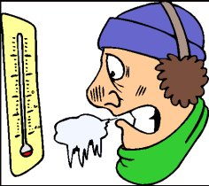
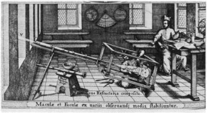
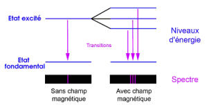

Préparons nous au refroidissement ! (billet le plus récent, le 28/11/2010)Permettez moi, avant d'aborder le sujet de cette page un peu iconoclaste, un petit prologue destiné à introduire les méthodes scientifiques alternatives à celle du GIEC qui, comme vous le savez, est basée sur les projections données par les ordinateurs. Ces dernières font la manchette des journaux alarmistes et prédisent une élévation constante de la température de la planète dans les années qui viennent... Mais (on ne vous le dit jamais), il y a deux manières, très différentes, d'aborder les sciences du climat, la climatologie. Or, ces deux approches conduisent à des résultats et à des prévisions diamétralement opposées...Voyons cela :
A noter que cette distinction entre ces deux approches, très différentes, de la science climatique, n'est absolument pas propre à cette dernière. On retrouve actuellement cette dualité dans pratiquement toutes les sciences des systèmes complexes. La première méthode est toute récente. Elle procède des énormes progrès accomplis par les ordinateurs durant ces dernières décennies. La seconde est la méthode traditionnelle, classique. C'est celle qui a permis à la Science d'accomplir les immenses progrès que nous connaissons. C'est celle de Louis Pasteur ou de Claude Bernard, parmi d'autres. Ainsi, le débat actuel qui oppose les tenants de l'effet de serre anthropogénique et les "sceptiques", ou plutôt, les "rationalistes" n'est pas seulement un débat scientifique habituel. Il reflète aussi le débat, plus vaste encore, qui oppose, dans les sciences de la complexité, les tenants des sciences de l'observation à ceux des simulations numériques par ordinateur. Peu d'entre vous connaissent la grande diversité des projections modérément alarmistes des ordinateurs du GIEC. Par contre, tout le monde connaît les prévisions catastrophistes du bureau politique du GIEC, répercutées et amplifiées au centuple par les journaux, les télévisions, les écologistes, Al Gore etc. qui s'en font quotidiennement l'écho au point que beaucoup commencent à se lasser de ce matraquage en règle, qui constituera un précédent dans l'Histoire avec des conséquences sans doute désastreuses.
Examinons successivement quelques indications qui vont dans le sens d'un prochain refroidissement. |
||||||||||||||||||||
|---|---|---|---|---|---|---|---|---|---|---|---|---|---|---|---|---|---|---|---|---|
1) Analyse Statistique de l'évolution de la température de la planète sur de longues périodes de temps précédant l'époque actuelle. (2008) Nombreux sont les chercheurs qui étudient à la loupe et sans a priori, les fluctuations naturelles de la température de notre planète. Car contrairement à ce que beaucoup s'imaginent, et à ce qu'on vous affirme inconsidérément, la température de la terre n'a JAMAIS été stable, même sur de courtes périodes de temps. Elle a constamment varié de plusieurs dixièmes de degré, voire de plusieurs degrés, au cours des milliards d'années écoulées et continuera sans aucun doute à le faire, au gré des influences naturelles dont on ne vous parle jamais. Il est donc stupide de s'alarmer quand la température de la planète augmente de quelques dixièmes de degré en quelques décennies (comme à présent) ou diminue d'autant comme elle l'a fait de 1940 à 1975 (voir ici). En réalité, elle fait cela depuis la nuit des temps... Kotov, S.R. "Near-term climate prediction using ice-core data from Greenland" dans Geological perspectives of global climate change (eds L. C. Gerhard et al) 47, 305-315, 2007.
Nous allons nous intéresser plus particulièrement aux deux derniers de ces articles, c'est à dire à ceux de Michael E. Schlesinger et Navin Ramankutty (1994) puis de Klyashtorin et Lyubushin (2003). Klyashtorin et Lyubushin ont tout d'abord essayé de vérifier s'il existait une corrélation statistique ( rigoureuse, c'est à dire au sens mathématique du terme) entre la consommation de carburants de la planète (charbon, gaz et fuels compris) avec les variations de température enregistrées sur la planète de 1861 à 2000. C'est à dire depuis le début de l'ère industrielle. A noter que, ce faisant, ils s'affranchissent de l'imprécision concernant la proportion exacte du CO2 rejeté par l'homme et qui stagne dans l'atmosphère. (article en pdf ici) Voici les courbes qu'ils ont utilisées. Ces courbes proviennent des bases de données mondiales accessibles à tous les chercheurs. La courbe en noir, épaisse, donne les variations de température du globe moyennées sur 13 ans. La courbe annuelle est représentée en tireté. L'échelle des températures est à droite en degré C. La courbe en grisé, constituée de petits carrés, représente la consommation mondiale en énergie fossile en fonction du temps. On observe que cette courbe commence à monter rapidement à partir des années 50. L'échelle, en millions de tonnes, est représentée sur la gauche. Même si on n'est pas un statisticien chevronné comme nos deux chercheurs russes, on voit du premier coup d'oeil que si corrélation il y a, celle ci n'est pas évidente. En effet, le refroidissement des années 1905-1915 et surtout, celui des années 1943-1975, portent un rude coup à la corrélation supposée. Il est a noter que Klyashtorin et Lyubushin ne se sont pas contentés de reproduire simplement la courbe officielle des températures, sans autre forme de procès. Ils ont vérifié cette courbe en la comparant à des mesures du taux de l'isotope O18 prises par carottage au Groënland. Les résultats de la comparaison étant satisfaisants, ils ont estimé, sans risque, que la courbe des températures reproduite ci-dessus est bien correcte. Mais que nous dit l'analyse statistique mathématique de la corrélation existante (ou non) entre ces deux courbes ? Mais, bien entendu, et même si elle est intéressante, cette étude préliminaire ne nous dit rien sur les températures des années à venir..
En effet, et cela crève les yeux, la température semble osciller avec une période de 60 ans environ, pendant la période considérée. La courbe ci-contre qui représente approximativement une sinusoïde, révèle une montée sous-jacente des températures. Si on mesure la pente de cette montée, on trouve que celle-ci correspond à une variation de température d'environ +0,4°C/100 ans ce qui équivaut (si cette montée était due au CO2) à une sensibilité au CO2 comprise entre 1/4 et 1/6ème de la sensibilité (rétroactions incluses) moyenne proposée par le GIEC, ce qui conduirait à un réchauffement de la planète négligeable. A noter que cete sensibilité est assez proche de ce qu'ont trouvé, indépendamment, R. Lindzen ou encore R. Spencer par des méthodes totalement différentes. A noter aussi que la moyenne des températures effectuées avec une "moyenne glissante" de 13 ans comme dans cette étude, gomme largement les fluctuations non corrélées liées aux explosions volcaniques (froid) ou aux événements El Niño (chaud) ou La Niña (froid). Dès lors, il est naturel d'extrapoler les courbes de températures suivant la même tendance après l'année 2000. Comme on le voit sur leur courbe comme une série de traits verticaux (indiquant les marges d'erreur), cette étude nous indique que la planète va connaître une période de refroidissement succédant à la période de réchauffement que nous avons connue de puis 1975. A noter que cette étude a été réalisée avec le support de l'US National Research Council lors d'un stage aux Etats Unis. Connaissant les tendances de cette agence, ils n'ont pas dus être très contents des résultats ! Les résultats de Klyashtorin et Lyubushin (2003) aboutissent sensiblement aux mêmes conclusions que leurs prédécesseurs (Shlesinger et Ramankutty) qui, en 1994, avaient utilisé des bases de données différentes.
Après de savants calculs de statistiques, les deux chercheurs de l'Université de l'Illinois ont noté une péridiodicité qui varie entre 65 et 70 selon les bases de données utilisées. A noter que Klyashtorin et Lyubushin, eux, ont étendu l'observation de ce type d'oscillation sur une période de quelques 1000 ans, jusqu'à nos jours.
Dès lors, (mais Klyashtorin et Lyubushin ne pouvaient le faire. Leur article date de 2003), il est tentant de rapprocher leurs prévisions qui ne commencent qu'en l'an 2000, des mesures réelles de la température de la planète jusqu'en 2007. Tout simplement pour vérifier si leur prévisions se sont révélées exacte, au moins jusqu'en 2007. Sur la figure suivante à droite, La courbe du bas est celle de Klyashtorin et Lyubushin. Elle va de 1950 à 2020. La courbe du haut (1979-2007) reproduit la courbe officielle des températures globales relevées par deux organismes spécialisés qui utilisent des satellites et mesurent la température de la basse atmosphère. Comme vous le voyez et comme cela est rappelé plusieurs fois dans les textes de ce site, la température du globe s'est au moins stabilisée, si elle n'a pas commencé à diminuer depuis quelques 6 ou 7 ans... Voire depuis 1998 qui est l'année d'un courant chaud très exceptionnel dû à El Niño (voir ci-dessous).
Il est assez remarquable que la courbe que nos deux chercheurs russes ont établi en 2003, ait correctement prévu l'existence d'un plateau de température (2005-2010) qui est très apparent dans les mesures connues, en cette fin de l'année 2007. Ainsi et comme ces chercheurs n'ont trouvé aucune corrélation entre la consommation d'énergie fossile par l'homme et la température, on peut raisonnablement penser que la température du globe va commencer à diminuer dans les années à venir, comme cela semble d'ailleurs être le cas pour l'année 2007 qui touche à sa fin au moment où j'écris cet article....
Et voici une autre publication, à titre d'illustration, elle aussi basée sur des analyses statistiques, qui nous vient de chercheurs chinois : En début 2007, " Des scientifiques chinois prédisent un refroidissement global imminent". 'référence : Zhen-Shan, L. and Xian, S. 2007. Multi-scale analysis of global temperature changes and trend of a drop in temperature in the next 20 years. Meteorology and Atmospheric Physics 95: 115-121. Le titre en français : Analyse multiéchelle des variations de température globale et tendance vers une chute de température dans les 20 prochaines années. Mise à jour du 29 mars 2009 : Obtenant des résultats cohérents avec ceux évoqués ci-dessus mais partant, cette fois-ci , d'un grand nombre de données paléoclimatiques, Le Professeur Syun-Ichi Akasofu qui est le fondateur et l'ancien directeur (il est retraité depuis 2007 et son nom vient d'être donné au bâtiment du CIRA ) du Centre International de Recherche sur l'Arctique (Alaska Fairbanks) défend l'idée que les variations de températures récentes (depuis 1800) résultent, en réalité, de la superposition de deux phénomènes parfaitement naturels qui sont :
La figure suivante qui est extraite d'un de ses derniers articles intitulé " Les deux composantes du récent réchauffement climatique" (pdf, 5Mo) en dit plus qu'un long discours (l'article publié en 2010 est accessible ici): Le trait noir représente, selon le Professeur Akasofu, la remontée naturelle de la température du globe sortant du petit âge glaciaire précédent. Akasofu montre que ce genre de comportement est naturel et qu'il s'est reproduit à plusieurs reprises aux cours de l'histoire de la planète : Le taux de remontée serait d'environ 0,5°C/100 ans (à rapprocher des 0,4°C/100 ans trouvés par Klyashtorin et Lyubushin ci-dessus à partir d'une analyse purement statistique. Les zones en bleu et en rouge indiquent les périodes de refroidissement et de réchauffement résultant des oscillations multidécennales (période environ 60 ans comme trouvé ci-dessus).On y retrouve les périodes de refroidissement et de réchauffement bien connues. Akasofu a pris soin d'indiquer en trait rouge gras, le période de montée des températures sur-utilisée par le GIEC, partant de l'année 1976 (année du basculement de la PDO) que nous venons de traverser et qui s'est arrêtée aux alentours de l'an 2000 avant de redescendre ainsi que nous l'avons répété à de multiples reprises dans cette page. Akasofu donne aussi le graphe suivant en précisant à quel point le GIEC et ses affidés sont dans l'erreur en se limitant à la considération de cette partie (en rouge gras) limitée de l'évolution du climat.
Ici encore, le graphe ci-contre peut se passer des longs commentaires que vous trouverez dans l'article sus-cité. Le rectangle de couleur jaune indique les données observationnelles sur la température terrestre de 1880 à 2000. La remontée des températures due à la récupération du petit âge glaciaire est indiquée en pointillé qui se retrouve naturellement dans l'alignement de la tendance (en noir fin) moyenne des données observationnelles. La partie droite de ce graphe indique les projections (prévisions, scénarios etc.) des ordinateurs du GIEC à partir de l'année 2000. Il est clair que la tendance moyenne du GIEC (en pointillés rouge) se trouve dans le prolongement de la montée des températures qui s'est produite de 1976 à 2000 environ. Au contraire, les prédictions d'Akasofu se répartissent comme des oscillations multidécennales (période 60 ans) autour d'une valeur moyenne qui aboutit à une prédiction de 0,7°C en 2100, donc bien inférieure aux prévisions de +2°C à +6°C du GIEC... La petite flèche verte indique la situation actuelle. Deux remarques complémentaires :
Voici la conclusion de l'article du Prof Akasofu au sujet de l'échec des prédictions du GIEC pour la dernière décennie : "Le GIEC semble penser que l'arrêt ( NDLR : de la hausse des températures) est temporaire. Cependant, il est incapable d'en donner une explication. Plusieurs enregistrements récents incluant la phase de l'oscillation pacifique décennale (PDO), l'arrêt de la montée des océans et le refroidissement de l'océan Arctique, indiquent que que cet arrêt résulte d'un changement multidécennal. Les hautes températures prédites par le GIEC en 2100 (+2 à +6°C) ne sont rien d'autre qu'un simple prolongement de la hausse observée entre 1975 et 2000 qui résulte essentiellement d'un changement multidécennal. Les modèles globaux du climat (GCM) sont programmés pour reproduire la hausse des températures de 1975 à 2000 en terme d'effets du CO2, puis prolonger cette courbe jusqu'en 2100. On conseille au GIEC, au moins, de reconnaître son échec dans la prédiction de la première décennie du siècle actuel. D'autant plus qu'une prédiction devient de plus en plus erronée au fur et à mesure que l'on s'éloigne vers le futur lointain. " Dans le même article, Akasofu explique que "L'échec du GIEC vient du fait que de dernier a beaucoup exagéré l'effet du CO2 tout en minimisant les causes naturelles du changement des températures" On ne saurait mieux dire ! Note : Il reste à trouver les causes des basculement périodique des températures océaniques (NAO, AMO, PDO etc.). ceux qui sont intéressés pourront lire la présentation Power Point de Tim Patterson qui montre que ces oscillations seraient corrélées aux cycles solaires (Cycles de Gleissberg, notamment). ( Gleissberg Cycle: Pacemaker for the Pacific Decadal Oscillation? (PowerPoint)).
|
||||||||||||||||||||
2) L'évolution des températures océaniques semble indiquer un prochain "basculement climatique "comme il s'en est produit un en 1977. Ce paragraphe est inspiré d'un article écrit par Joseph d'Aleo. Joe d'Aleo est un expert en météorologie, successeur de John Coleman à la TV Weather Channel. Il est l'auteur d'un grand nombre d'articles et d'un livre plus particulièrement spécialisés dans l'étude des couplages entre le climat et les oscillations périodiques des océans (NAO et PDO). Il est membre élu de l'American Meteorological Association (AMS). Il est actuellement Président du comité de l'AMS chargé de l'analyse du climat et des prévisions. Il est un spécialiste reconnu des courants marins comme El Niño et La Niña. Voici ce qu'il écrit dans son article qui sert de base à ce paragraphe. On ne peut faire mieux en guise d'introduction que de le lire : "En 1977, l'océan pacifique a subi une évolution majeure qui est appelée "Le grand changement climatique de l'océan pacifique". De manière soudaine, des eaux chaudes ont remplacé les eaux froides qui avaient prévalu pendant la plus grande partie des trois décennies précédentes sur la cote ouest de l'amérique du nord et le long de la cote équatoriale du pacifique est. En 1997, des chercheurs de l'Université de Washington on rapporté dans un article du bulletin de l'American Meteorological Society, qu'ils avaient découvert une oscillation multidécadale (NDLR : qui dure quelques dizaines d'années) dans les températures et les pressions de l'océan pacifique en étudiant les modifications décadales du rendement de la pêche au saumon. Ils ont appelé cette oscillation PDO, la "Pacific Decadal Oscillation". Ils ont noté que l'année 1977 avait été l'occasion d'un basculement de la phase froide à la phase chaude de cette oscillation PDO." Ainsi, dans le mode "chaud" les eaux chaudes sont favorisées dans la partie Est de l'océan pacifique par une majorité de courants El Niño tandis que dans le mode "froid", ce sont les courants La Niña qui prédominent. Il est intéressant de rapprocher les graphiques qui montrent l'évolution de la température du globe avec celui qui donne l'intensité des courants El Niño (chauds) et La Niña (froids). C'est ce qui est fait ci-dessous : Ces deux graphiques, remis à la même échelle de temps couvrent la période 1950-2006. Celui du haut représente les anomalies de température du globe en degrès centigrades Celui du bas indique l'indice ENSO, c'est à dire l'indice qui mesure l'intensité des courants El Niño (en rouge) et La Niña. On voit du premier coup d'oeil qu'il existe une coïncidence nette entre le basculement de l'indice ENSO et le basculement des températures du globe survenu en 1977 (c'est l'époque où on craignait un nouvel âge glaciaire !), où on est passé d'une période refroidissement à une période de réchauffement. Vous remarquerez aussi que l'année 1977 correspond exactement au changement de sens de la variation sinusoïdale évoquée par Klyashtorin et Lyubushin dans la première section de cette page (ci-dessus). 1977 est effectivement l'année où les températures du globe ont commencé à remonter après la décroissance des années 1940-1975. (voir figure ci-dessus) Mais, comme "corrélation n'est pas raison", et en particulier dans le cas de celle, chancelante, du taux de CO2 et de la température du globe, considérons la courbe suivante, qui donne l'anomalie des températures du globe mesurée par satellites ( unités MSU : Microwave Sounding Unit" UAH : Université d'Alabama, Huntsville) sur laquelle on a noté l'existence des phénomènes El Niño (qui réchauffent) et des éruptions volcaniques (qui refroidissent). Comme on le voit clairement, les pics de température, dans un sens comme dans l'autre correspondent parfaitement avec l'occurrence des phénomènes El Niño et des éruptions volcaniques, comme Le Pinatubo (1991) ou El Chichon (1983). Vous remarquerez que les refroidissements dus aux phénomènes volcaniques ne se produisent qu'avec un temps de retard d'environ un à deux ans qui est le temps nécessaire pour que les aérosols émis dans l'atmosphère produisent leurs effets, puis disparaissent. Le "El Niño" de 1998, exceptionnellement intense, est très visible sur ce graphe. Il correspond bien au maximum des températures terrestres. Autrement dit, il est évident que les phénomènes El Niño et La Niña qui caractérisent les températures et les courants de l'océan pacifique jouent un rôle déterminant ou, du moins, sont corrélés aux variations de la température terrestre. A noter que les oscillations nord atlantiques (NAO) suivent traditionnellement les PDO avec quelques années de retard. L'effet de ces oscillations sur la température globale ne doit pas nous surprendre quand on sait qu'environ 73% de la surface de la planète est constitué par les océans. A quoi ressemble un phénomène La Niña ?
Ci-contre, une image récente ( du 15 novembre 2007), publiée par la NOAA, qui montre les anomalies actuelles de température des océans du globe. Ce graphique est codé en couleurs de l'arc en ciel comme à l'habitude : Bleu=froid, rouge=chaud) La Niña est plus particulièrement associée à l'onde bleue horizontale et oscillante que l'on voit atterrir au niveau de l'équateur sur le continent Sud-Amérique. A noter que les courants El Niño, lorsqu'ils existent, se traduisent par les couleurs complémentaires de celles de La Niña. Autrement dit vous remplacez mentalement le bleu par du rouge pour avoir une idée assez exacte de ce que donne le phénomène El Niño. Mais pour ce qui est du temps présent (Novembre 2007) on constate qu'un courant La Niña de grande intensité a pris naissance et que les océans montrent une tendance nette au refroidissement, à l'exception peut-être de la partie Nord Atlantique qui n'en verra le contre-coup que dans peu d'années. Compte tenu de ce qui a été écrit plus haut au sujet des corrélations qui existent entre la température du globe et les courants chauds ou froids, il n'est pas douteux que la présence inopinée de ce courant La Niña en cette fin d'année 2007 est l'indice, sinon la preuve, d'un refroidissement généralisé. Hélas, il n'est pas encore possible de prévoir l'occurrence des El Niños ni des La Niñas dans les années qui viennent bien que certains auteurs établissent une corrélation avec les cycles solaires que j'évoque ci-dessous. Néanmoins, on peut remarquer que la survenue inopinée de La Niña en cette fin d'année 2007 est un excellent indice d'un refroidissement prochain de la planète conformément aux prévisions de Klyashtorin et Lyubushin, ci-dessus. Ce que nous ne savons pas encore, c'est combien de temps il va persister... Mise à jour du 30 avril 2008 : L'oscillation pacifique multidécennale (PDO : pacific multidecadal oscillation) froide, semble avoir commencé nous annonce un communiqué de la NASA (source avec analyse de la NASA). ci-contre : image NASA par Jesse Allen, AMSR-E données traitées par Chelle Gentemann et Frank Wentz. En bleu : plus froid. En rouge : plus chaud. Comme nous le voyons dans l'image ci-contre, à côté de la traînée persistante mais en voie de résorption du phénomène La Niña, est apparue la signature caractéristique de la PDO froide qui va de la côte Ouest de l'Alaska jusqu'au sud de l'Amérique du Nord, en pénétrant profondément dans le pacifique est, jjusqu'à rejoindre la zone froide de La Niña. Cette cartes de températures obtenu par les satellites Aqua indique les anomalies par rapport à la moyenne 1885-1997 collectée par les satellites Pathfinder. Clairement, le scénario qui était évoqué plus haut, s'est mis en marche. Cela implique très probablement un refroidissement marqué de la planète pour les 20 ou 30 prochaines années... D'autant plus que l'oscillation Nord Atlantique du même signe suit généralement, après quelques années, les PDO telles que celle que nous observons actuellement. _______________________________________________________________________________________________________________________ Mise à jour du 8 Mai 2008 : En écho à l'annonce rafraîchissante de la NASA, est sorti, le 1er Mai 08, un article dans la revue Nature (453, 84-88 (1 May 2008) doi:10.1038/nature06921), signé par Noel Keenlyside et al, qui concerne l'autre versant du continent américain, c'est à dire l'océan Atlantique. Cet article intitulé "Proposition d'une prédiction climatique décennale dans le secteur Nord Atlantique" Les chercheurs ont considéré l'influence de l'Oscillation Atlantique Multidécennale (AMO) sur le MOC (circulation des courants : Meridional Overturning circulation). Le fameux Gulf Stream que l'on voit sur le dessin ci-contre fait partie de ces courants marins qui déterminent largement la température des continents voisins, lequel Gulf Stream est lui même influencé par les les vents d'Ouest (c'est à dire par la rotation de la terre) et le système de circulation thermohaline. Sans rentrer dans les détails plutôt techniques de cette étude, rappelons que cette oscillation est quasi-périodique avec une période de 60-70 ans. Les auteurs de l'article (tous membres actifs du GIEC) ont (enfin !) inclus ces phénomènes océaniques bien connus dans leurs programmes de prévision des températures pour les dix prochaines années. Le résultat est clair est net : Les prédictions changent considérablement : L'océan Atlantique, l'Europe et l'Amérique vont se refroidir (légèrement, disent-ils) dans la prochaine décennie. En d'autres termes, les prévisions du GIEC qui avaient été annoncées avec force publicité dans les médias, et dans le dernier rapport officiel... sont erronées. En bref, au lieu de se réchauffer rapidement en proportion du CO2 atmosphérique, comme prévu par les scénarios du GIEC, le climat va se refroidir ou rester stable pendant (au moins) les dix prochaines années, c'est à dire au moins jusqu'en 2018 ! C'est la démonstration effective que la prise en compte des facteurs naturels ( que réclamaient les "sceptiques" à cor et à cri, depuis des années) changent considérablement les prédictions des ordinateurs. Cette nouvelle est très importante, et les réactions qu'elle a suscitée dans le petit monde "réchauffiste" sont tout à fait révélatrices de leur état d'esprit. Voici, par exemple (source)ce qu'a dit l'auteur principal Keenlyside : “We thought a lot about the way to present this because we don’t want it to be turned around in the wrong way,” Soit " Nous avons beaucoup réfléchi sur la manière de présenter cette nouvelle parce que nous ne voulons pas la voir interprétée dans l'autre sens". Et il ajoute pour être encore plus clair. “I hope it doesn’t become a message of Exxon Mobil and other skeptics.” Soit " J'espère que ce résultat ne deviendra pas un message d'Exxon Mobil et autres sceptiques" La déontologie de ces scientifiques me laisse rêveur : Depuis quand les scientifiques qui font une découverte doivent se préoccuper d'en faire un compte-rendu pour ne pas déplaire aux uns ou aux autres ? Leur problème n'est plus de découvrir et d'affiner nos connaissances scientifiques sur le sujet. Non ! Il faut surtout que le public continue à ne pas se poser de questions...sur le sacro-saint effet de serre. Et que nous affirment les quelques "réchauffistes" le plus souvent incompétents, que l'on rencontre en bandes organisées sur les blogs ? Ceci : "Oui. Bon, ça va se refroidir pendant 10 ans. Mais après, vous allez voir ce que vous allez voir !" D'autre part, si les océans sont capables, comme ils le disent, d'annihiler l'effet de serre du CO2 dans la prochaine décennie, pourquoi ne seraient-ils pas aussi responsables du réchauffement bénin que nous avons subi de 1977 à 1998 (21 ans !) et qui correspond exactement à la forte prédominance des El Niños et de l'oscillation océanique chaude pendant cette même période ? Les océans ne marchent-ils que dans un seul sens, celui du refroidissement et jamais du réchauffement ? Et que restera-t-il de l'influence du CO2 si ces chercheurs font ce calcul qui est très facile pour eux ? Cette démarche scientifique de confrontation des modèles avec les faits déjà observés serait parfaitement naturelle (je dirais même obligatoire) pour un chercheur indépendant, mais n'y comptez pas trop... D'autre part, le silence médiatique français est pour le moins bizarre, pour ne pas dire symptomatique. Pratiquement aucun de nos médias français, pourtant prompts à trompetter les nouvelles alarmistes (Libération, le Figaro, les châinesTélés, France-Info ...) n'a soufflé mot des deux articles précédents (NASA et Nature). Seul le site WEB de France 24 International qui ne pouvait sans doute faire autrement, vu qu'il est lu par des étrangers qui disposent de nombreuses autres sources d'informations. Le journal "Le Monde" lui, s'en est tiré, 12 jours plus tard, par une pirouette en titrant sur un pari stupide proposé par Michael Mann (celui de la crosse de hockey) et Stefan Rahmstorf (celui qui est en compétition avec Al Gore pour le record de hauteur en terme de prévision de la montée du niveau des océans) aux auteurs de cet article fondamental et dont les implications et les conséquences ne sont ni expliquées ni commentées dans les colonnes du Monde ni des autres médias. A l'inverse du comportement des médias français, les médias anglophones ont très largement répercuté ces informations jusques et y compris le New York Times ( pourtant supporter de l'AGW) et le site de la BBC (avec des commentaires très politiquement corrects, comme on s'y attend)... Mais ce qu'il faut surtout voir dans ces découvertes des mois d'avril-mai 2008, c'est que l'évidence expérimentale et l'observation objective des faits, démontrent, qu'on le veuille ou non, qu'à elles seules, les fluctuations naturelles d'un seul paramètre (les océans) surpassent ou neutralisent l'effet de serre théorique du CO2 dont l'importance réelle, je vous le rappelle, n'a jamais été démontrée. Désormais le GIEC aura bien du mal à négliger, dans l'avenir, les facteurs naturels qui influencent le climat, comme ils l'a toujours fait jusqu'à présent. Et si on commence à prendre en compte sérieusement les lentes oscillations de tous les facteurs naturels (Soleil et Océans), que restera t-il du CO2 ? Michael Mann, Stefan Rahmstorf, James Hansen, "le Monde" et les autres, bref tous ceux qui ont engagé leur capital crédibilité sur cette affaire de CO2 anthropogénique, l'ont parfaitement compris. Face à un article sérieux dans Nature qui pose une vraie question, écrit par des collègues parfaitement qualifiés et qui font partie du GIEC, leur réaction est pitoyable : un pari stupide et un article ridicule qui sont, sans aucun doute, à la mesure de leur désarroi... ___________________________________________________________________________________________________________________ Les analyses précédentes montrent que les températures des océans et de la surface terrestre sont indissolublement liées. On observe nettement des cycles multidécennaux corrélés des températures de ces différents sous-systèmes. Il est hors de question d'imaginer que le taux de CO2 en croissance continue et plus ou moins constante dans l'atmosphère constitue le moteur N°1 de ces oscillations. Par contre, il existe un moteur bien connu que le GIEC se refuse encore à considérer malgré les nombreuses évidences publiées, jour après jour, dans la littérature scientifique...C'est tout simplement le Soleil (voir explications détaillées ici). Je vous rappelle ici le résultat des études de quatre chercheurs américains :
White W.B., Lean J., Cayan D.R. et Dettiger M.D. en 1997 (Journal of Geophysical research 102; 3255) qui montrent une corrélation manifeste entre la TSI (l'irradiance solaire) et les températures des océans.
On voit très clairement comme dans cette image comme dans les graphes ci-dessus que les températures des océans (et la TSI) remontent de manière synchrone après le point de basculement de 1977.
09 Février 2009 : Joseph d'Aleo vient de publier plusieurs graphes intéressants directement reliés à la figure précédente. Ces graphes concernent les corrélations nettes qui existent entre le paramètre qui décrit les températures des océans (Atlantique AMO et Pacifique PDO ), la température moyenne des USA et l'irradiance solaire totale (TSI) (source des courbes). Comme vous allez le constater, ses observations recoupent celles White W.B., Lean J., Cayan D.R. et Dettiger M.D. qui sont les auteurs des courbes ci-dessus qui, elles, datent de 1997. Je rappelle que AMO signifie Oscillation Multidécennale Atlantique et PDO signifie Oscillation (multi)décennale Pacifique. l' USHCN est l'organisme qui se charge de la compilation des températures Nord-Américaines.
Ce graphe résulte de la superposition de la température moyenne des USA (en noir, fournies par l'USHCN) avec la somme des paramètres AMO+PDO représentée en gris clair sur ce graphique. Les Etats Unis étant bordés par les océans pacifique et atlantique, il est logique d'effectuer cette somme. Le résultat de cette superposition est étonnant. Si on prolonge ces oscillations au delà de l'an 2008, on s'attend à un refroidissement marqué des océans ainsi qu'à une baisse des températures pour les années à venir conformément à ce qu'à suggéré Mojib Latif lors de la Conférence Mondiale sur le Climat (WCC3). On voit sur la courbe en noir que la température maximale de la période actuelle (dû au grand el Niño de 1998) mesurée aux Etats-Unis est à peine supérieure à celle des années 40 (le dust bowl). En réalité, et selon la version du "USHCN Temp" utilisée, les résultats peuvent apparaître un peu différemment. Cette question a fait l'objet d'un débat animé suite à la découverte d'une anomalie avérée dans les données du GISS qui fait (pour le GIEC) référence en la m:atière. (voir cette page pour plus de détails). Cependant, compte tenu de l'imprécision des mesures de température, cette question reste anecdotique. Disons que les températures maximales qui ont été mesurées aux USA pendant la période actuelle sont très proches de celles que les USA ont connu dans les années 40. Le second graphe, ci-contre, montre une corrélation assez nette entre l'irradiance solaire (TSI) et la courbe de température des Etats-Unis fournis par l'USHCN et donc la corrélation de la TSI avec les températures AMO+PDO. Les deux ovales en tiretés rouges représentent les point de basculement de la température et de la TSI. Je rappelle que la courbe de croissance du CO2 dans l'atmosphère est une courbe continue qui ne marque aucun décrochement pendant la période 1950-1980. Cette période froide (on craignait un nouvel âge glaciaire, à l'époque) qui détruit la corrélation CO2/température a été attribuée (sans preuve) par les modélisateurs du GIEC à la présence d'aérosols refroidissants Au vu de ces courbes qui reproduisent fidèlement cet abaissement de température, on imagine aisément ce qu'il en est de cette hypothèse. Et comme on sait, par ailleurs, que les variations de la TSI (total solar irradiance) sont directement corrélées avec les taches solaires, on constate que tout cela est très probablement lié... Alors, que nous prédit l'analyse du comportement de l'astre solaire pour les années à venir ? C'est ce que nous allons voir maintenant.
|
||||||||||||||||||||
3) Le déclin éruptif des cycles solaires entraînera un refroidissement, sans doute intense, de la planète... Un très grand nombre de travaux, publiés dans la littérature scientifique depuis 1801 (!), rapportent la corrélation frappante qui a existé au cours des âges et depuis les temps les plus reculés et qui existe encore, entre l'activité éruptive de l'astre solaire et les températures du globe. L'image ci-dessous montre une très belle éruption à la surface du soleil. Ces séries d'éruptions solaires suivent des cycles presque périodiques d'une durée approximative de 11 années.
Vous trouverez une analyse, non exhaustive mais assez détaillée de ces découvertes, dans la deuxième partie de la page "Théories du réchauffement climatique sous la loupe", ou encore ici de manière plus succincte.
D'autres, des milliers d'autres, qui eux n'ont pas les mains liées par des impératifs , soutiennent activement cette théorie et la considèrent comme pratiquement avérée, tant est grande la quantité d'observations positives à ce sujet. Ainsi sont nées une longue série de prévisions pour les températures à venir qui se basent sur la connaissance que nous avons de l'évolution des cycles éruptifs de notre astre solaire. Comme je l'explique en détail dans cette page, une activité éruptive faible correspond inévitablement à une baisse des températures. Et c'est bien ce que prévoient, pour les années à venir, beaucoup d'astrophysiciens et de nombreux autres scientifiques qui penchent pour cette théorie. Parmi des milliers d'autres, certains physiciens ou astrophysiciens ont défendu cette thèse contre vents et marées au cours des années passées. C'est le cas, en particulier de Theodor Landsheidt (son site ici) , (photo ci-contre, à droite, décédé en 2004). Landscheidt était un astrophysicien renommé, extrêmement cultivé.Il était l'expert N°1 dans la prévision des cycles solaires et de leurs conséquences sur le climat de notre planète. Il fonda et présida un grand nombre d'organismes d'astrophysique. Il était un partisan convaincu des thèses selon lesquelles les éruptions solaires sont pilotées par les mouvements conjugués des planètes du système solaire, rejoignant en cela les idées de Rhodes Fairbridge dont je parlerai plus loin et bien entendu de l'influence directe des cycles solaires sur le climat. Voici ce que disait Theodor Landscheidt, peu de temps avant son décès : "J'ai aussi prédit, en 1984 que l'activité solaire diminuerait après 1990. C'est ce qui arriva. Bien qu'un comité d'experts ait prédit en 1996 et même deux années plus tard, que le cycle 23 serait de grande amplitude comme les cycles précédents (soit 160 taches solaires moyennées sur un mois). L'activité réellement observé n'était que de 120, donc beaucoup plus faible. Avant son décès survenu en 2004, Theodor Landscheidt avait laissé une sorte de testament pour les années à venir. Il prévoyait que la température allait progressivement décliner jusqu'en 2030 (Ce qui rejoint les prévisions de Fairbridge, d'Abdoussamatov et de l'école Russe, voir ci-dessous). Voici ce qu'il écrivait (ici) A noter que son article est intitulé : "Un nouveau petit âge glaciaire au lieu du réchauffement global ?" : "Nous n'aurons pas besoin d'attendre jusqu'en 2030 pour voir si le prochain minimum profond du cycle de Gleissberg ( NDLR: périodicité longue d'environ 88 ans du cycle solaire) est correctement prédit. Le cycle 23 actuel avec son intensité notablement faible, semble être une bonne indication de cette tendance que nous avions prévue, sur la base des cycles solaires, il y a deux décennies.... Les événements El Niño devraient devenir moins fréquents et moins intenses (NDLR : Nous sommes carrément rentré dans un La Niña (froid) en fin d'année 2007 ). Les prédictions à long terme seulement basées sur les cycles solaires peuvent être considérées comme un démenti des hypothèses du GIEC sur le réchauffement anthropogénique." Rhodes Fairbridge, lui aussi décédé tout récemment (en 2006), soutint exactement les mêmes idées que Theodor Landscheidt. Rhodes Fairbridge était un scientifique australien dont la fécondité et la culture scientifique laissent rêveur. Il publia quelques 1000 (!) articles scientifiques dans plusieurs disciplines et un très grand nombre de livres (une centaine, et notamment des encyclopédies sur des sujets très variés).Il fut président d'un très grand nombre d'organismes scientifiques et fut couvert d'honneurs durant son existence. Il est, entre autres, le père d'une théorie, longtemps décriée par l'establishment scientifique, mais qui est maintenant universellement acceptée, sur les mouvements oscillatoires des niveaux marins au cours des âges. Ses 70ème; 80ème et 90ème anniversaires ont fait l'objet de la publication de trois gros volumes d'articles scientifiques qui lui sont entièrement dédiés. Bref, Rhodes Fairbridge était un géant de la science. Sa spécialité était l'observation attentive des cycles astronomiques et de toutes leurs conséquences, notamment sur le climat. C'est ainsi qu'après avoir observé un grand nombre de phénomènes divers et de périodicités (aussi bien en géologie qu'en géomorphologie, dans les glaciations, les sédiments, les dunes de sables, les roches des plages, les courants marins, les variations du champ magnétique terrestre, la dendrochronologie, les biotas etc.), il acquit la conviction que les mouvements et les éruptions de l'astre solaire jouaient un rôle déterminant. Il devint ainsi un partisan convaincu de l'influence prépondérante des cycles solaires sur le climat. Pour Rhodes Fairbridge, tout cela ne faisait plus aucune doute. Il fut le premier à établir le modèle dit "SIM" (Solar Inertial Motion, mouvement inertiel du soleil) pour expliquer l'évolution et la durée des cycles solaires successifs, suivi d'ailleurs par Theodor Landsheidt. Selon Fairbridge, le système solaire (c'est à dire le soleil et les planètes) tout entier, effectue des mouvements plus ou moins périodiques autour de son barycentre. Le soleil est ainsi conduit à se déplacer d'une distance qui correspond à deux fois son diamètre. Tous ces mouvements sont d'une grande complexité parce qu'ils sont plus ou moins chaotiques du fait que les périodes de révolution des différentes planètes autour du soleil sont différentes. Les deux plus grosses planètes de notre système qui sont Jupiter et Saturne jouent évidemment un rôle prépondérant dans le déplacement de l'astre solaire. Ainsi et selon le modèle de Fairbridge, le déplacement maximum du soleil est obtenu lorsque les deux planètes (Jupiter et Saturne) sont alignées avec le soleil. Ce sont, d'après la théorie de Fairbridge, ces déplacements divers qui sont à l'origine des variations de l'intensité et des durées des cycles éruptifs du soleil....et donc des variations du climat de notre planète, comme l'avait pressenti William Herschell dès 1801. De fait, il va nous être possible de tester (une fois de plus) le modèle SIM de Rhodes Fairbridge. En effet, celui-ci prédit une atténuation marquée et progressive des cycles solaires de 2010 à 2040 avec un refroidissement généralisé à la clef... tout comme le prévoyait Theodor Landscheidt. La théorie SIM prédit que le cycle solaire N°24 sera encore plus faible que le cycle 23 (déjà moins intense que les précédents). D'après cette théorie, le cycle 24 devrait ressembler au cycle 14 qui commença en février 1902 et se termina en août 1913. De plus cette théorie SIM prédit également que les cycles 25 et 26 seront encore moins intenses que les cycle 24, lui même moins intense que le cycle 23, ce qui devrait nous conduire à un nouveau petit âge glaciaire...Brrr... Voici une image de ces fameux cycles solaires. On a porté en ordonnée le nombre de Wolf qui est, en gros, le nombre des taches solaires. Les cycles qui figurent après le cycle 23 sont évidemment encore hypothétiques. L'année 1700 correspond à la fin du petit âge glaciaire avec la réapparition des taches solaires, restées absentes durant environ 60 ans, pendant cette période froide Notez aussi que le minimum de Dalton (entre 1800-1820, très froid) recouvre la période de la retraite de Russie sous Napoléon qui avait vraiment mal choisi son moment pour envahir ce pays... ___________________________________________________________________________________________________________________ Le 29 Juin 2008 : Un article tout à fait dans l'esprit des idées de Rhodes Fairbridge et Theodor Landscheidt, évoquées ci-dessus vient de paraître dans les publications de l'Astronomical Society of Australia (PASA revue par les pairs). Il est intitulé " Does a Spin–Orbit Coupling Between the Sun and the Jovian Planets Govern the Solar Cycle ?" Un couplage spin-orbite (NDLR : terme bien connu des physiciens quantiques qui caractérise le couplage entre la trajectoire d'un objet et sa rotation sur son axe, un peu comme une toupie lancée sur le sol) entre le Soleil et les planètes Jupitériennes gouverne-t-il le cycle solaire ? ( I. R. G. Wilson, B. D. Carter et I. A. Waite). Le résumé de cet article (source) n'est pas très explicite quant aux conséquences futures d'une telle découverte (et l'article n'est pas accessible gratuitement). Ce qui l'est beaucoup plus, c'est ce que l'un des auteurs a déclaré à Andrew Bolt, journaliste au Herald Sun (Australie). (source) : "Cet article va dans le sens de l'idée que le niveau d'activité du Soleil va notablement diminuer au cours de la décennie à venir et va rester faible pendant environ 20 ou 30 ans. Chaque fois que le Soleil a fait cela dans le passé, il en a résulté une baisse de température de 1 à 2°C (NDLR : comme pendant les mimima de Maunders ou de Dalton)" Encore ? ça commence à faire beaucoup. Brr....ça devient vraiment inquiétant : Il faudrait demander à nos gouvernants qui se réunissent régulièrement pour prendre des mesures anti-CO2 préconisée par le GIEC, s'ils ont prévu un plan B en cas de refroidissement... Certainement pas. Hélas. Au vu des ces résultats de recherche, ils le devraient... ____________________________________________________________________________________________________________________ Enfin, la Science Russe n'est pas une fervente admiratrice du GIEC, loin de là ! Les russes sont réputés très forts dans différentes disciplines dont, probablement, la plus éminente est l'astrophysique. L'Institut de Poulkovo est sans aucun doute un (sinon le) meilleur du monde. C'est ainsi que beaucoup de chercheurs russes, très experts dans l'observation des planètes et du soleil sont des supporters convaincus des théories que j'ai brièvement rappelé ci-dessus. Le plus connu chez nous, car il s'est permis quelques déclarations fracassantes contre les thèses du GIEC qui ont été répercutées en Occident, est, sans aucun doute, le Professeur Khabibullo Abdoussamatov (voir ici une de ses déclarations). Mais, il est très loin d'être le seul a être convaincu que le soleil est le seul responsable ou en tout cas, le responsable majeur du réchauffement climatique bénin que nous avons connu récemment sur notre planète. A titre d'exemple, voici le titre et le résumé d'un article publié dans la littérature scientifique russe, de chercheurs de l'Institut de Physique Soleil-Terre d'Irkutsk. ______________________________________________________________________________________________________________________ V. S. Bashkirtsev and G. P. Mashnich Institut de Physique Soleil-Terre, Division Sibérie, Académie des Sciences de Russie IAPC Nayka ( NDLR: IAPC Sciences) relayé par Springer Verlag (US), Août 2002 Résumé : Les données successives sur les nombres de Wolf (NDLR : le nombre de taches solaires) et sur la température de l'air au dessus de Irkutsk et le globe entier, ont été analysées. Les variations des températures locales (Irkustk) et globales ( la terre entière) suivent les variations de l'activité solaire. On prédit une chute globale des températures pour les 25 années à venir, à partir de la forte corrélation soleil-terre et du déclin prévu de l'activité solaire jusque vers 2025. Le moins que l'on puisse dire c'est que toutes ces prévisions de chercheurs russes, allemand et australien convergent pour prévoir une longue période de refroidissement....qui risquent de repousser les accords de Kyoto 2 (et les éco-pastilles pour les voitures des français) aux calendes grecques... N'en déplaise aux écologistes, Al Gore et autres thuriféraires du zéro carbone. Dès lors se pose une question cruciale : Alors, où en sommes nous exactement du point de vue de la fin du cycle solaire 23 qui semble s'éterniser ? Que nous annonce-t-il ? Pour répondre à cette question qui nous taraude puisque de sa réponse risque de dépendre le climat de notre planète dans les années à venir, voici quelques remarques inspirées d'un article du 5 décembre 2007, publié par un astronome anglais ( Dr David Whitehouse, auteur de "le soleil : une biographie", chez John Wiley, 2004) Après une activité exceptionnelle durant les cycles précédant le cycle 23 actuel , l'activité éruptive solaire s'est brusquement arrêtée ce qui normal entre deux cycles à condition que cela ne dure pas trop longtemps. Depuis plusieurs mois, aucune tache n'est apparente sur le disque solaire.Tous les astronomes attendent le futur début du cycle 24 à venir... mais qui ne vient pas !
C'est alors que ce samedi 4 janvier 2008...
Note : David Whitehouse s'appuie sur le fait qu'il existe, entre deux cycles successifs une sorte de palier où des "sunspots" apparaissent sans qu'il y ait véritablement de croissance du nombre de ces taches solaires.
Ce palier est assez apparent entre la fin du cycle 22 et le débat du cycle 23. Il a duré près d'un an. La question est donc de savoir où nous en sommes actuellement. Sur le palier ou déjà sur la montée en puissance du cycle ? Comme toujours, soyons patients. Nous aurons bientôt la réponse à la question. Je vous tiendrai au courant et nous aurons alors une idée un peu plus précise de ce que sera l'amplitude du cycle 24 et donc, en principe, des températures à venir... En attendant vos pouvez toujours voir ce tableau qui résume un certain nombre des prédictions pour le cycle 24... Comme vous le verrez les prédictions sont plutôt dispersées. Et, pour suivre cette affaire de près, voici un beau cadeau pour 2008 : le soleil en temps réel avec ses taches éruptives ! (trouvé sur le site Météo et Climat : merci !) Cliquez sur l'image de droite ! Voici aussi un lien qui traque les eruptions solaires au jour le jour avec des commentaires. Vous observerez que les taches qui sont apparues ces jours derniers se trouvent proches de l'équateur. C'est étonnant. En général, le début d'un cycle est marqué par des taches solaires qui apparaissent dans les latitudes élevées... Bizarre ! Le cycle 24 a t'il bien commencé ? Note du 24 janvier 2008 : Si vous avez suivi cette affaire avec attention, vous savez maintenant que notre astre solaire est demeuré silencieux depuis près de 15 jours : Aucune tache nouvelle n'est apparue depuis la disparition des deux taches qui ont émergé sur l'équateur, il y a une quinzaine. Il y a gros à parier que ces deux taches appartenaient au cycle 23 agonisant (parce qu'elles étaient sur l'équateur)....A suivre. Le point sur l'état de l'activité solaire au 16 avril 2008 : De l'avis de beaucoup, les deux taches très faibles du cycle 24 ne sont encore que des précurseurs. Il est donc possible que le cycle 24 n'émerge finalement que dans quelques mois... Mais qui sait ? Voici un site qui vous permet de voir le relevé officiel des sunspots, réactualisé tous les mois. Attention, les sunspots 23 et 24 sont comptabilisés ensemble...
 A noter que des chercheurs chinois et indiens ( P. Chetterjee, Jie Jiang et Arnab Rai Choudhuri) prévoient un cycle 24 35% plus faible que le cycle 23 (article en pdf ici), tout comme celui-ci, ce qui est en total accord avec le modèle SIM de Rhodes Fairbridge (voir ci-dessus) mais qui contraste nettement avec les prévisions de Dikpati et al (2006) qui prévoyaient, en 2006, un cycle 24 50% plus intense que le cycle 23. Nous verrons bien qui a raison... _________________________________________________________________________________________________________________ Et enfin, voici la tendance de la température globale ( latitudes 70S a 82.5N), pour les 10 dernières années, à partir des données satellites RSS officielles de la basse troposphère .(source)
Le dernier point à droite est celui de Novembre 2007. Il y a plus récent ci-dessous. La régression linéaire élémentaire donne - 0,05°C/ décennie ! La température du globe baisse depuis dix ans alors que le taux de CO2 dans l'atmosphère a continué à augmenter comme auparavant... A noter que la glace du pôle Nord dont on nous a dit qu'elle devait disparaître rapidement, s'est reconstituée à une vitesse record à la fin de l'automne 2007.... En attendant et en décembre 2007, au Canada et aux Etats-Unis, on a battu des records... Voir les coupures de presse ici :
Des basses températures, proches des records absolus ont été enregistrées dans le Wyoming, le Canada, le Pakistan, La Caroline du Nord , et d'autres... Addendum du 01/02/2008 : "Un faible activité magnétique solaire peut annoncer un nouvel âge glaciaire" C'est le titre d'un article qui vient de paraître, en ce début février 2008, et qui fait référence aux observations récentes du radio télescope de l'Agence Spatiale Canadienne (CSA). Ce radio télescope mesure, en permanence, les densités de flux magnétique qui accompagnent normalement les éruptions solaires. Le Directeur du projet du CSA, Ken Tapping (qui s'inquiétait auparavant du réchauffement climatique...) fournit, chaque jour, à diverses agences comme la NASA, les données de ce qu'il appelle "le stéthoscope du soleil". En l'occurrence, c'est plutôt le "docteur" dont la santé est affectée par les résultats des mesures comme le le dit le journal. Voici ce que dit Tapping en ce début février 2008 :" De manière classique quand vous suivez l'activité magnétique solaire à travers les cycles de 10 ou 11 ans, vous voyez les résultats des mesures monter et descendre. Le chiffre le plus bas est 64 à 68. Les valeurs de 71 ou 72 sont très basses mais, en général, elles se mettent à monter. Nous sommes à la fin d'un cycle mais les valeurs mesurées n'ont toujours pas augmenté. Nous plaisantons, à la cafétéria, en nous disant que nous assistons peut-être à l'extinction du soleil." Voici, à titre d'illustration, ce qui s'est passé lorsque l'activité éruptive solaire a disparu :
Ce dessin montre des patineurs en train d'exercer leur art sur la surface de la Tamise gelée. On voit aussi des attelages. On peut apercevoir la tour de Londres dans le lointain.
Cela recommença brièvement autour de 1810 (minimum de Dalton, 2 cycles faibles), pendant que Napoléon battait en retraite en Russie...La Bérézina. C'était vraiment pas de chance. Il aurait dû prendre connaissance des travaux de William Herschell (1801)... Brr.....
En attendant la suite, voici la courbe des températures relevées par les satellites RSS de la basse troposphère (couche en contact avec la terre), incluant le mois de janvier 2008. Cette courbe mesure la température du globe à l'exception des pôles. Les résultats des températures relevées par les satellites UAH (John Christy, University of Alabama Hunstville) sont pratiquement identiques. Cette courbe est tirée d'ici. Ce sont les données brutes. Ce graphe commence en 1979, date de la mise en orbite de ces satellites. Les abscisses sont en mois.On voit très bien la chute des températures (en fait sans doutes due à la Niña actuelle) depuis 4 à 5 mois (août 2007 à fin janvier). On sait bien que sur une aussi courte période, le refroidissement, très visible, n'est pas statistiquement significatif mais imaginez ce qu'en auraient tiré les médias si la courbe avait été dans l'autre sens... A noter que le premier refroidissement (75ème mois) correspond à l'explosion du volcan El Chichon (1984) . Le troisième refroidissement (après le 160ème mois) résulte de l'explosion du Pinatubo (après 1991). Cette fois-ci (heureusement), il n'y a pas de volcan à blâmer. A noter aussi que tous les pics de réchauffement sont concomitants avec des El Niño, comme montré ci-dessus. On voit aussi, comme l'avait noté, le Dr Pachauri, le Président du GIEC lui-même que les températures ne montaient plus depuis quelques 7 ans et qu'elle ont stagné sur une sorte de plateau. Voici ce qu'a dit le prix Nobel Pachauri (à l'agence Reuters) à propos de ce plateau : "On a vraiment envie de voir ce que cela signifie sur la base d'une analyse. Existerait-il des facteurs naturels qui compensent (NDLR : l'effet du CO2 généré par l'homme) ? C'est curieux, comme remarque. A aucun moment, il ne lui vient à l'idée que le réchauffement pourrait être attribué à d'autres causes... Il doit trop lire le résumé SPM et pas assez les revues scientifiques. Je viens d'aprendre que certains, sur les blogs (info-climat par exemple), ne sont toujours pas convaincu que l'enneigement de ce mois de Janvier passé est assez exceptionnel dans l'hémisphère Nord...parce qu'il fait assez doux à Bécon-les-Bruyères. Janvier 2008 détient le record absolu de neige (juste au dessus de 1984) depuis 1966.
Et enfin, ce que nous attendions tous : La publication des températures terrestres (c'est à dire relevée par des thermomètres) par le Goddard Institute (James Hansen). Voici la courbe en rouge du GISS tirée d'ici : Ce qui est plus étrange dans les données sorties par James Hansen qui, en général, fait l'inverse, c'est que la différence de température entre le mois de Janvier 2007 et Janvier 2008 (-0,75°C) est plus importante que celle relevée par les satellites (-0,6°C environ)...Ilfaut dire que le mois de janvier 2007 était particulièrement chaud d'après le GISS. Il y a quelques petits problème avec les moyennes terrestres, comme on s'en doutait. (voir ici, vers la fin). Le pic négatif de Janvier 2008, à l'extrémité droite du graphique, est tout à fait remarquable....
Toujours à propos des éruptions solaires dont la reprise se fait toujours attendre en cette mi-février 2008, voici une image tout à fait intéressante à verser au dossier de l'évolution de la "dynamo solaire". (source)
Ce graphe reproduit l'enregistrement (1991-2008) de l'indice magnétique du soleil qui est directement lié à l'activité solaire. On observe sur ce graphe qu'il s'est passé quelque chose de très curieux en octobre 2005. Il y a une chute brutale de cette activité magnétique qui, depuis, ne semble pas avoir repris son intensité habituelle, ce qui inquiète beaucoup le Dr Tapping (ci-dessus). Ce changement brutal et ce quasi-silence qui lui a succédé signifient certainement un changement important dans le fonctionnement de l'astre solaire. Souhaitons que que nous n'allions pas vers un nouveau minimum de Maunders ou de Dalton... Sinon l'ours ci-dessous risque d'avoir encore plus froid !
|
||||||||||||||||||||
Mise à jour du 7 juin 2008 : Le refroidissement très net, amorcé en janvier 2008 se poursuit. Le mois de Mai bat des records de froid du XXIème siècle. Tout d'abord faisons le point sur les relevés de température moyenne du globe donnés par le RSS (Remote Sensing System; satellites, la plus fiable (avec UAH) source ici et ici ). L'abscisse est graduée en mois. Le mois de Mai 2008 a rattrapé toute la baisse observée en Janvier, février et mars de cette année. Suivant les données de l'UAH l'anomalie est de -0,17°C. C'est la température la plus froide depuis Janvier 2007 et c'est la troisième plus froide température depuis Septembre 1993.... (source)
Voici maintenant un lien de l'UAH très intéressant pour ceux qui veulent suivre les températures, pratiquement jour à près jour. Si vous cliquez dessus, ne ce début du mois de Juin, vous observerez que pratiquement toutes les températures enregistrées depuis le début de l'année sont en dessous (et parfois de plus de 0,2°C) de celles de la même époque à l'année dernière. Si vous vous demandez pourquoi j'utilise, de préférence, les données satellitaires RSS ou UAH au lieu des données thermométriques produites par James Hansen de la NASA, allez voir ce post. Et encore un autre lien passionnant et interactif pour ceux qui veulent observer des corrélations ou des anticorrélations entre différents observables comme les taux de CO2, les températures océaniques, les températures du globe etc (merci à Frédéric de Skyfal). Et les taches solaires se sont endormies faisant déjà du cycle 23 l'un des plus longs depuis très longtemps... Pour commencer, voici à titre d'exemple, à quoi ressemblait le développement des taches solaires du cycle 23... quand il n'était pas assoupi...
Comme on le voit sur la photo de droite, prise en 99, c' est à dire presque au sommet de l'activité éruptive, quand le soleil est actif, ça bouge fort!
Où en est le soleil actuellement, c'est à dire en début Juin 2008 ? Depuis plusieurs mois, on a vu un certain nombre de taches, peu actives, apparaître sur l'équateur. Ce sont des taches du cycle 23 en train de mourir. Seules deux ou trois petites taches du cycle 24 sont apparues. Je vous rappelle qu'on les distingue de celles du cycle 23 par leur polarité magnétique qui, d'ailleurs, s'inverse pour l'hémisphère Nord et Sud du soleil. Ces taches de début de cycle 24 apparaissent en général dans les secteurs de haute ou basse latitude. Mais pour l'instant, et depuis longtemps, l'activité (24 comme 23) est vraiment très faible comme nous le voyons sur la figure suivante. Cette image (même source que la précédente) rapporte, sur le même graphique , les activités solaires (en moyenne annuelle de taches solaires) des cycles 19 à 23. Comme vous pouvez le voir, le cycle actuel 23 (représenté avec des petites étoiles) n'a toujours pas amorcé sa remontée et présente une activité pratiquement nulle, plus basse que celle du cycle 20 qui avait duré assez longtemps lui aussi. Si ce n'est pas le minimum de Maunders ou de Dalton, cela y ressemble. Tous les autres cycles ont été plus courts que le cycle actuel et le 23 menace d'être encore plus long que le 20. Je vous rappelle que le cycle 20 correspond au fameux épisode du "faux petit âge glaciaire" que certains redoutaient dans les années 70 parce qu'il faisait froid....(voir le célèbre Newsweek de 1975 et le Times de Janvier 77, ci-dessous) Que peut-on conclure de la situation ? La durée du cycle 23 est maintenant de pratiquement 12 ans, ce qui est beaucoup. Ceci renforce l'idée que la cycle suivant sera faible... avec du froid à la clef. Après le palier ou la descente des températures du globe de 1998 à 2007, l'année 2008 semble avoir amorcé une descente tout à fait remarquable conformément à l'absence d'activité du cycle solaire et au basculement des oscillations océaniques et pacifiques...Tout cela en accord avec les études statistiques présentées au début de cette page. Malheureusement (ou heureusement pour échapper à l'hystérie ambiante) il semble bien que le titre de cette page soit amplement confirmé : Préparons nous au refroidissement ! et demandons à nos ministres et à nos présidents s'ils ont prévu .. "un plan B" pour contrecarrer un possible refroidissement. J'ai bien peur que NON. Mis à jour le 07/06/2008 Addendum du 3/07/08 : Titre du Telegraph UK (non repris par la presse Francophone ni par France-Info, évidemment) : "Les hivers très rudes forcent les cavaliers de Mongolie à abandonner la vie nomade" (source) |
||||||||||||||||||||
Note du 24 Juin 2008 : Heureux qui comme Ulysse a fait un beau voyage... et revient avec des informations très intéressantes sur le magnétisme polaire du soleil.
En l'occurrence et comme vous l'avez deviné, Ulysses (en anglais) est un satellite d'observation. Il a été expédié dans l'espace il y a quelques 17 ans avec pour mission d'étudier en détail notre astre solaire. Ulysses s'est révélé particulièrement résistant puisqu'il a excédé d'un bon facteur 4 sa durée de vie programmée par les ingénieurs de la NASA et de l'ESA (European Space Agency) responsables de cette opération. La mission de cet émissaire exceptionnel se terminera le 1er Juillet prochain. selon le site de la NASA (source). "Ulysses ends its career after revealing that the magnetic field emanating from the sun's poles is much weaker than previously observed. This could mean the upcoming solar maximum period will be less intense than in recent history." Autrement dit : "Ulysses termine sa carrière en révélant que le champ magnétique issu des pôles du soleil est beaucoup plus faible que celui qui avait été observé précédemment. Ceci pourrait indiquer que le maximum solaire de la période à venir pourrait être moins intense que celle de l'histoire récente". En termes plus clairs que ce court billet de la NASA qui n'a pas forcé son talent en matière de pédagogie, (est-ce volontaire ?) ceci signifie que l'affaiblissement constaté des champs magnétiques des pôles du soleil va probablement induire une baisse considérable de l'activité solaire. Ceci est évidemment à rapprocher de la constatation récente du ralentissement aussi brutal qu'inopiné du "conveyor belt" (le"tapis roulant" qui est à l'origine de la formation des éruptions solaires) et dont David Hataway (scientifique de la NASA) disait en décembre 2007 (source):"It's off the bottom of the charts... this has important repercussions for future solar activity. What's more, it's not the only indicator that the Sun is up to something." . En français : "L'indicateur ( NDLR : de la vitesse de rotation du tapis roulant) se trouve plus bas que le cadre du papier d'enregistrement... Ceci a des conséquences importantes pour l'activité solaire du futur. De plus ce n'est pas le seul indicateur qui montre qu'il va se passer quelques chose du côté du soleil..". Bref et pour faire encore plus simple, et comme une sorte de testament rédigé juste avant sa disparition, Ulysses nous a rappporté une indication cruciale qui corrobore tout à fait celles que nous connaissions déjà : L'activité solaire va beaucoup diminuer dans les années qui viennent. Et si l'on en croit tout ce que je vous ai expliqué ci-dessus et qui est défendu par un grand nombre de scientifiques (mais surtout pas par ceux du GIEC qui ignorent superbement ces événements) : Il va probablement bientôt faire froid sur notre belle planète bleue ! Quoique nous fassions de notre énergie fossile ... Et, hier, le 23 Juin 2008, James Hansen (ci-contre) du GISS de la NASA , le grand prêtre des réchauffistes (Al Gore étant le pape), le jour anniversaire de sa première déclaration alarmiste de 1988, a réclamé au Congrès Américain l'inculpation pour "crimes contre l'humanité " (rien que ça !) des présidents des grandes compagnies pétrolières américaines (source). |
||||||||||||||||||||
23 septembre 2008 : le soleil semble s'être assoupi ! Si vous avez lu ce qui précède ou la page "grands indicateurs du climat", l' image ci-contre ne vous est pas étrangère. Elle vous indique la progression de l'indice des éruptions solaires, actualisée au 5 septembre 08. En rouge sont indiquée les deux prévisions pour le prochain cycle. A noter que les prévisionnistes sont divisés sur l'intensité du cycle 24 à venir, d'où les deux courbes en rouge. Si vous regardez bien la valeur du nombre de sunspots relevés pendant les derniers mois écoulés, vous constatez que ce nombre est tombé à zéro, ce qui est plutôt exceptionnel dans l'histoire de l'observation des cycles solaires.. On remarque aussi qu'il serait vraiment étonnant que le soleil reprenne suffisamment de vigueur dans un avenir proche pour parvenir à rejoindre les courbes des prévisions (en rouge). Les prévisionnistes vont, sans doute et une fois de plus, devoir revoir leur copie... Mise à jour le 6/10/2008. Et en effet, David Hathaway de la NASA vient, une fois de plus, de réactualiser sa prédiction. Voici une animation des réactualisations successives depuis 2004 : image animée (crédit Michael Ronayne (affichée sur Wattsup)) Cette simple observation est corroborée par les résultats de la mission Ulysse dont je vous ai parlé ci-dessus. C'est dans ces conditions que la NASA, visiblement très étonnée, sinon inquiète, a décidé (ce qu'elle ne fait pratiquement jamais) de donner une conférence de presse ( 23 sept 08) pour alerter nos contemporains de la situation anormale de l'astre solaire. Je vous rappelle que l'émission de vent solaire est une conséquence directe de la présence des sunspots ou des éruptions solaires. Le titre du texte de la NASA est révélateur : "Ulysse révèle que l'éjection du vent solaire plasmatique est à son minimum depuis 50 ans" (source) .En voici quelques extraits, traduits en français : "Les données rapportées par Ulysse qui a rempli une mission sous l'égide de la NASA et de l'ESA (European Space Agency), montrent que le soleil a réduit l'éjection du vent solaire à un niveau le plus bas depuis que les mesures précises ont pu être réalisées. L'état actuel du soleil pourrait réduire l'effet d'écran naturel qui enveloppe notre système solaire." "Le vent solaire qui a une vitesse d'un million de miles à l'heure gonfle une bulle protectrice (l'héliosphère) autour du système solaire. Ceci a une influence sur ce qu'il se passe ici, sur terre et ceci jusqu'aux limites de notre système solaire au confins de la galaxie" dit Dave McComas, le chercheur responsable de l'étude du vent solaire qui est aussi directeur exécutif senior à l'Institut de Recherche Sud-Ouest de San Antonio. " Les données d'Ulysse montrent que la pression globale du vent solaire est la plus faible enregistrée depuis le début de l'ère spatiale". "Le vent solaire plasmatique est un flux de particules chargées éjectées de le haute atmosphère du soleil. Le vente solaire interagit avec toutes les planètes de notre système solaire. Il détermine aussi la frontière entre notre système solaire et l'espace interstellaire. Cette frontière appelée héliopause, sépare notre système solaire des régions où la force du vent solaire devient insuffisante pour repousser le vent venant des autres étoiles. La région qui se trouve autour de l 'héliopause agit aussi comme un bouclier pour notre système solaire, en le protégeant d'une portion importante des rayons cosmiques qui proviennent de l'extérieur de la galaxie". "Les rayons cosmiques galactiques transportent avec eux les radiations provenant d'autres parties de notre galaxie" dit Ed Smith qui est scientifique au Jet Propulsion Laboratory de Pasadena, (Californie). "Avec un vent solaire plus faible que jamais, il y a de grandes chances que la taille et la résistance de l'héliosphère diminuent. Si ceci se produit, une plus grande quantité de rayons cosmiques pénétreront jusqu'au coeur même de notre système solaire." ... ."En 2007, Ulysse a effectué son troisième scan rapide du vent solaire et du champ magnétique pôle Sud-pôle Nord du soleil. En comparant les résultats avec les observations précédentes du cycle solaire précédent (NDLR : cycle 23) on a trouvé que le vent solaire et le champ magnétique présent dans le vent solaire ont décru de 20 pour cent. Le champ magnétique à proximité du vaisseau spatial a décru de 36%." Dave McComas ajoute (source) " Ceci est un changement très important. En fait, le vent solaire que nous avons maintenant est le moins intense que nous ayons observé, pendant une longue durée, depuis le début de l'ère spatiale, c'est à dire depuis 1960." Voici une illustration typique des résultats d'Ulysse présentée par les chercheurs responsables de la NASA lors de la conférence de presse :
En vert une illustration de la pression dynamique du vent solaire enregistrée pendant la période allant de février 92 à février 98. En bleu, la pression du vent solaire enregistrée lors de la troisième orbite autour du soleil, c'est à dire de février 2004 au mois d'août 2008. Comme on le voit sur ce graphique, la diminution de 20% de la pression du vent solaire est réellement impressionnante.
Alors, quelle conclusion doivent en tirer ceux qui, comme les lecteurs de ce site, s'intéressent aux conséquences possibles de l'atténuation du vent solaire sur le climat ? Comme vous le savez si vous avez lu cette page, très nombreuses et très diverses sont les corrélations observées entre les cycles éruptifs solaires, ou le taux de radiation cosmique et les températures terrestres et ceci depuis la nuit des temps. D'autre part, Henrik Svensmark et son équipe ont proposé une théorie (et effectué des expériences) qui explique que les rayons cosmiques sont responsables de l'ennuagement à basse altitude. Comme on sait que les nuages à basse altitude refroidissent la planète, nous devons nous attendre au refroidissement ... comme le disait le titre de cette page. Compléments du 30 septembre 2008 : Encore un communiqué de la NASA (source) sur le même sujet et dont le titre est " Soleil sans taches ; L'année la plus dépourvue de taches depuis le début de l'ère spatiale " Voici quelques extraits du comuniqué : " Le 27 Sept 2008, le soleil a été 'vide", c'est à dire qu'il n'a montré aucune tache visible, pendant 200 jours de l'année. Pour retrouver une année avec un soleil plus inactif, il faut remonter à l'année 1954, trois ans avant le lancement du Spoutnik, pendant laquelle le soleil é été vide pendant 241 jours." David Hathaway du NASA Marshall Flight Center déclare " Nous sommes dans une période de grand minimum du cycle solaire".
Espérons tout de même que nous ne sombrerons pas dans un minimum de Dalton (ou de Maunders) qui a correspondu avec des périodes de très faible activité solaire et de grand froid ! Le froid est, de loin, bien pire que le chaud, pour la planète. Attendons la suite ... |
||||||||||||||||||||
Où en sommes nous en cette mi-décembre 2008 ?
1) La situation du soleil : Comme il est rappelé par la Nasa dans le post du mois, d'octobre précédent, l'année 2008 est marquée par une remarquable absence de taches solaires. Sans parvenir au chiffre de 280 jours sans taches évoqué par David Hathaway et si on la compare aux années du XXème et XXIème siècle, l'année 2008 se classe (en ce 12 décembre) en troisième position juste derrière les années 1912 et 1913 qui ont été deux années particulièrement froides.(cf ci-dessous). Le graphe ci-contre (source) a été réalisé le 8 décembre 2008. Une nouvelle tache (N° 1009) a été été identifiée dans la partie Sud Est et en bordure du disque le 10 décembre. Elle devrait rapidement être invisible du fait de la rotation apparente du soleil. Le 12 décembre , on peut donc dire que si la seconde moitié de décembre comporte encore 6 jours sans taches, sur les 19 restants, l'année 2008 occupera la seconde place sur le graphique ci-contre. Ceci est assez probable. C'est à dire que l'année 2008 occupera la seconde année place dans le classement du nombre de jours sans éruptions solaires des XXième et XXIème siècles, donc sur 108 ans. Remarquez que les deux années 2007 et 2008 figurent dans le "top-ten" des années pauvres en taches de ces deux siècles. Ainsi, le minimum solaire depuis la cycle 23 a vu 489 jours sans taches ce qui le place immédiatement après les cycles 14-16 (des années du début du XXème siècle)qui ont été exceptionnels puisque ces années figurent dans le "top-ten" du graphe précédent. Mise à jour du 1er Janvier 2009 :ça y est ! l'année 2008 est achevée. 2008 a largement battu l'année 1912 en matière de nombre de jours (266 contre 253) sans éruptions solaires. 2008 est donc la seconde année des XXième et XXIème siècles en matière d'inactivité solaire.
Et, au premier janvier 2009, le soleil est toujours vide de taches...
Dans le courant du mois de novembre, il avait pourtant semblé (à certains) que le cycle solaire 24 reprenait un peu de sa vigueur, comme on peut le voir à l'extrémité droite du graphique suivant qui se termine au 30 Nov. 2008. Il n'en était rien puisque le soleil s'est de nouveau assoupi pendant plusieurs semaines consécutives après cette brève reprise (spots 1007 (2 nov)) et 1008 (10 nov)). On observe aussi sur ce graphique que les prévisions de la NASA (en rouge) qui avaient déjà été déplacées plusieurs fois auparavant, nécessiteront, au moins, encore un recadrage supplémentaire. Les lecteurs savent qu'il n'existe pas encore de théorie confirmée (voir cette page) sur l'influence des cycles solaires sur le climat. Néanmoins, un très grand nombre d'observations très diverses et venant de diverses parties du globe donnent à penser que cette influence existe, bien que certains persistent à la nier.
Mise à jour 7 Janvier 2009 : Voici les toutes dernières prévisions d'Hathaway de la NASA. Comme on le pressentait, il a fallu encore minimiser et décaler la courbe du cycle 24 à venir. La prévision du maximum de celui-ci devrait intervenir en 2013. Le nombre de sunspots pourrait alors être d'environ 75 ce qui est notablement plus faible que celui du cycle 23 qui était de 125.
Toujours concernant les années à faible cycle solaires et à titre d'exemple, on peut rappeler que l'hiver 1911-1912 fut un hiver extrêmement rigoureux ainsi que le note cette source tirée d'un article du Toronto Star de février 2007 : "Cette semaine peut sembler froide, mais ce n'est rien, absolument rien comparé à l'hiver de l'année 1912, une année qui demeure dans les livres des records comme le pire hiver des 100 dernières années. A la mi-Janvier, il faisait si froid que le port de Toronto était complètement gelé. Au début de Février, la glace en bordure des berges du lac avait un mètre d'épaisseur et vous pouviez patiner de Toronto à Hamilton si vous aviez le temps. Vers le milieu du mois, tout le monde faisait des paris sur la date à laquelle tout le lac serait gelé. Cela se produisit à la fin du mois....." 2) La PDO (oscillation multidécennale Pacifique) le 15 Nov. 2008 (image source NASA), (texte source Nasa) Cette photo travaillée, prise par le satellite franco-US Jason1, spécialisé dans la mesure du niveau des océans, montre une image typique d'une grande zone froide de l'océan pacifique en forme de coin ou de triangle. Ce coin froid (en bleu et pourpre) de mer contractée est en général accompagné d'une zone plus élevée et plus chaude (en rouge -jaune) en forme de fer à cheval, comme on le voit sur cette animation de la NASA. Cette image moyennée sur une période de 10 jours centrés autour du 15 septembre est comparée à la période moyenne 1993-2008, pour ce qui est du code des couleurs. Pendant les années 80 et 90, l'océan Pacifique était bloqué dans une situation exactement inverse de celle-ci. Par contre, la situations actuelle ressemble à celles des années 1945-76 qui avait été marquée par un net refroidissement de la planète (au point de faire craindre un nouvel âge glaciaire) A noter que ce schéma de refroidissement des eaux du Pacifique n'a rien à voir avec un phénomène La Niña (ou El Niño) qui se présentent plutôt comme une zone froide (ou chaude) équatoriale en contact avec l'Equateur (le pays) américain. En réalité, et bien que nous soyons actuellement dans une période froide de la PDO, on ne voit pour l'instant ni El Niño, ni La Niña. Nous savons que les périodes froides de la PDO correspondent préférentiellement, mais sans exclusive, à des La Niña (voir ci-dessus). 3) Nous pouvons essayer d'en savoir un peu plus à partir des grands indicateurs officiels : Corrélation ENSO-Températures Globales Roy Spencer, Joe d'Aleo et Roger Pielke Sr, en particulier, pensent qu'il existe un lien étroit entre la température moyenne du globe, et l'Oscillation Pacifique Multidécennale PDO (et, sans doute, avec l'Indice MEI ENSO tel que relevé par la NOAA (ici)).
Pour tester ce point de vue, j'ai superposé les graphiques des relevés de température des quatre sources (UAH, HADCrut, GISS et RSS) (données par WoodFortress) avec les indices MEI de l' ENSO ( El Niño Southern Oscillation) de la NOAA (remis à l'échelle. C'est celui avec les gros chiffres) pour la période 1995 à nos jours. L'échelle verticale en petits chiffres représente l'anomalie de température globale. Remarquez que les courbes du HADCRUT et du GISS ont été décalées verticalement d'une quantité qui correspond à la différence des points d'origine comme cela est expliqué ici. L'indice MEI (Multivariate ENSO Index) est une combinaison de 6 paramètres mesurés au dessus du Pacifique Tropical. Le résultat de cette superposition (que j'ai vérifié en partant de la base des données numériques du site de l'ENSO de la NOAA) est reporté sur le graphique ci-dessus. Voici maintenant ce que donne la confrontation de la courbe MEI-ENSO (Cette fois-ci obtenue à partir des données numériques fournies par le site) et des températures données par les satellites (UAH et RSS), lorsqu'on déplace la courbe MEI-ENSO de 5 mois vers la droite.
Comme on le voit la coïncidence temporelle entre les variations de l'indice MEI de l'ENSO et la température moyenne du globe est bonne si on décale cette dernière de 5 mois vers la droite.
Le décalage de la courbe de l'indice MEI de l'ENSO vers la gauche par rapport aux courbes de températures globales signifie que les courbes de températures du globe suivent les courbes de l'indice ENSO avec un retard d'environ 5 mois... Autrement dit et encore, si on prolonge cette corrélation et en observant que l'extrémité droite de la courbe MEI-ENSO est en phase de refroidissement, on peut penser que la température moyenne du globe sera relativement froide dans les quelques mois à venir, avec une température proche ou très légèrement au dessus de la moyenne de référence. Ceci écartera encore davantage ce graphe des prédictions (prévisions ou scénarios) de températures ascendantes du GIEC. Si tout cela est vérifié, nous nous trouvons actuellement, au 15 décembre 08 (flêche verte), sur le bord l'intervalle entre les deux blocs bleus situés à l'extrémité droite de la courbe du MEI-ENSO. Nous sommes passés (ou nous passons encore) par un maximum local de température qui précède une baisse à venir. On peut s'étonner que les courbes des températures du globe soient aussi bien corrélées avec l'indice MEI de l'ENSO qui ne reflète que l'état de la mer et de l'air à la surface ainsi que l'ennuagement au dessus de la zone tropicale de l'océan Pacifique. Mise à jour du 23 Juillet 2009 : Un article peer-reviewé (qui me fait très plaisir, comme on s'en doute) vient de paraître qui retrouve et analyse avec force détails la corrélation décalée (de 5 à 7 mois au lieu de 5 comme dans ma tentative) de l'indice ENSO (SOI) et de la température globale de la basse troposphère, que j'avais détectée ci-dessus. Voici la référence complète de cet article : JOURNAL OF GEOPHYSICAL RESEARCH, VOL. 114, D14104, doi:10.1029/2008JD011637, 2009 Influence of the Southern Oscillation on tropospheric temperature Voici une courbe typique extraite de l'article en question (malheureusement d'accès payant) que l'on retrouve sur le site de l'AGU. En ordonnées à gauche, l'indice SOI traditionnel. La courbe en trait noir représente la variation de cet indice officiel SOI de 1980 à 2009. A droite, l'ordonnée qui correspond à la courbe en gris-bleu donne la température GTTA de la basse troposhère.en °C mesurée par les satellites de la NASA (données UAH et MSU), pendant la même période. Comme on peut l'observer sur ce graphique et comme on le voyait aussi sur mon graphique précédent, les variations de l'indice SOI sont suivies de variations assez semblables de la température GTTA, avec un retard que les auteurs de l'article ont soigneusement évalué à une durée variant entre 5 et 7 mois. Les explosions volcaniques dues au El Chichon (en 1982) et au Pinatubo (en 1991) ont manifestement provoqué un refroidissement temporaire qui ont "tiré" les températures troposphériques vers le bas pendant les trois ans ou quatre ans qui suivent les explosions, ce qui est conforme à ce que nous savons déjà. Voici la conclusion du résumé de cet article : " De manière générale, ces résultats suggèrent que l'oscillation SOI exerce une influence dominante sur la température moyenne du globe avec un effet maximum au dessus des tropiques sauf quand le volcanisme équatorial produit un refroidissement. Le fait que la température troposphérique du globe a, pendant les 50 dernières années, monté ou baissé en accord étroit avec le SOI qui existait 5 à 7 mois auparavant montre le grand potentiel des forçages naturels pour expliquer l'essentiel des variations de température. " Chris de Freitas, l'un des auteurs déclare à la (rare) presse intéressée (source) que " La montée des températures depuis 1977 peut être attribuée au basculement survenu en 1976, de l'océan Pacifique qui a fait que les conditions chaudes dues aux El Niño étaient plus probables qu'elles l'avaient été pendant les 30 années précédentes, avec des conditions La Niña moins probables....Nous avons montré que la variabilité interne du système climatique explique au moins 80% de la variation globale du climat lors du demi-siècle passé. Cela pourrait être même dévantage si les périodes d'influence des événements volcaniques majeurs pouvaient être clairement identifiées et les données correspondantes exclues de l'analyse des données." Qu'est-ce que ça veut dire en clair ? Comme je l'ait plus haut, cela veut dire que nous pouvons avoir une idée de l'évolution de la température du globe 5 à 7 mois à l'avance. Pour l'instant et après deux épisodes Las Niñas consécutifs, nous venons juste d'entrer en période El Niño. La température du globe qu'il fera cet hiver dépend de l'intensité de cet El Niño. S'il persiste et se renforce comme, par exemple, en 1997-1998, il fera plus chaud. S'il s'étiole rapidement comme il l'avait fait en 2002, il fera plus froid. Cependant et compte tenu du fait que nous sommes en phase PDO négative, la seconde éventualité semble plus probable. ___________________________________________________________________________________________________________________ De fait, ces observations sont parfaitement cohérentes avec les conclusions d'un article récemment proposé par Roy Spencer (soumis à Geophysical Research Letters mais disponible sur son propre site ici). Roy Spencer utilise un modèle physique simple pour montrer que les changements climatiques du globe sont, en réalité, "Une réponse naturelle aux changements de la couverture nuageuse associée à l'oscillation Pacifique Décennale (PDO)". Roy Spencer trouve aussi qu'une légère montée des températures se superpose aux effets de l'ENSO. Celle-ci pourrait être due à un faible effet de serre du CO2 sans rétroaction. Spencer en déduit une sensibilité de 0,44°C (hausse de température pour un doublement du taux de CO2). Ce qui, en pratique, est négligeable. Notez aussi que la PDO est une oscillation strictement naturelle qui n'a rien à voir avec l'effet de serre. A noter que Spencer ne mentionne pas le retard ENSO-températures que j'ai évoqué ci-dessus. Roy Spencer donne un séminaire le 15 décembre au Capitol Hill Club de Washington, précisément sur ce sujet. Il est plutôt surprenant (?) que le GIEC se soit toujours refusé à envisager une telle possibilité, alors qu'une simple superposition de graphes, que tout le monde peut faire chez soi, avec un minimum de moyens, permet d'avoir une intuition du résultat. Voilà une corrélation et une explication qui nous changent singulièrement de la pseudo-corrélation tant vantée par le GIEC entre le taux de CO2 et la température du globe. Laquelle était déjà largement défaillante entre 1945 et 1976, et l'est encore depuis 1998...Voici un graphe représentant les différentes projections données par les différents modèles de 2000 à 2100 réalisé par Spencer.
La zone rouge représente les projections des modèles du dernier rapport du GIEC (2007). Ces projections sont données avec un taux de confiance de 90% (!). Tout en bas, en tireté bleu, la projection de Spencer (et Brasswell) qui résulte des observations faites ci-dessus. La température, selon Spencer et Braswell ne devrait monter que de 0,7°C en cent ans, ce qui correspond d'ailleurs à ce que nous avons connu au siècle dernier.
Comme on le voit la différence entre les projections du GIEC et de Spencer (et Braswell) est énorme... A noter que d'autres chercheurs tels que Schwartz (2006), Douglass et al (2006) ainsi que Lindzen ont trouvé aussi des sensibilités notablement inférieures à celles du GIEC et ceci à partir de mesures totalement différentes et indépendantes... Que les "solaristes" n'oublient pas que des chercheurs ont trouvé des corrélations marquées entre l'irradiance solaire (TSI, elle même corrélée avec les cycles solaires) et les températures des océans. A noter aussi que les variations de température du globe que nous connaissons actuellement sont conformes aux observations statistiques de Klyashtorin et Lyubushin (2003) décrites ci-dessus. _____________________________________________________________________________________________________________________ . En cadeau, le cartoon ci-contre (James Hansen à gauche et son bras droit Gavin Schmidt, aussi animateur du site RealClimate, à droite) qui est inspiré de celui figurant sur ce site. Allusion au cafouillage des températures du GISS du mois de Novembre 2008 (voir ici)
|
||||||||||||||||||||
Mise à jour du 17 Fév. 2009 : Un article intéressant sur l'activité solaire vient de paraître, cosigné par le Professeur C. de Jager et son collègue S. Cet article rapporte un prévision pour le cycle solaire 24 et ses proches successeurs (source).
Je me contente de donner ici le résumé qui reflète parfaitement le contenu de l'article. Il nous dit tout. Les lecteurs avertis pourront lire l'article complet ici. Résumé de l'article : "La variabilité du soleil est régie par sa dynamo interne (NDLR : La dynamo solaire consiste en une interaction non-linéaire entre les composantes magnétiques équatoriale et polaire du soleil) qui est un système non-linéaire. Nous présentons une méthode statistique et physique qui prend en compte le caractère non-linéaire de la dynamo, destinée à la prévision de l'activité solaire. Cette méthode est basée sur l'analyse des mécanismes généralement acceptés de la dynamo ainsi que sur les découvertes récentes des propriétés systématiques de la variabilité solaire à long terme. La modulation de l'amplitude du cycle de Schwabe (NDLR: cycle de 11 ans) au sein des composantes magnétiques de la dynamo peut être décomposée en un niveau de transition invariant et en trois types d'oscillations autour de ce dernier. La régularité observée de ces trois cycles durant le dernier millénaire nous permet de prévoir l'activité solaire à venir. Nous trouvons que que le système subit, en ce moment, une transition allant du "Grand Maximum" vers un autre régime. Cette transition a commencé en 2000 et sa fin est attendue vers le maximum du cycle 24, prévue pour 2014 avec un nombre maximum de taches solaires Rmax = 68 + ou - 17. (NDLR : Je rappelle que le Rmax du cycle 23 est de 125. Les précédents, beaucoup plus) ). A cette époque, une période de faible activité solaire va débuter. Cette période sera une des oscillations régulières telle que celle qui s'est produite entre 1730 et 1923. Il est possible que la première de ces oscillations soit aussi fortement négative que celle qui s'est survenue vers 1810 auquel cas on aurait un bref "Grand Minimum" semblable à celui de Dalton. On s'attend à ce que cet épisode d'activité modérée à faible, dure au moins pendant une cycle de Gleissberg (60 à 100 ans)." Voici les dernières lignes de la conclusion : " Nous en concluons que même si le nombre maximum de taches solaires du cycle 24 atteignait la valeur minimale (52) ceci ne causerait pas la survenue d'un épisode de type "M" identique au minimum de Maunder. (NDLR : pendant lequel les taches avaient pratiquement disparu pendant plusieurs cycles successifs). Au contraire, un bref événement du type Dalton apparaîtrait. Celui-ci pourrait durer pendant, au plus, 3 cycles c'est à dire du cycle 24 au cycle 26 (NDLR : Soit plus de 30 ans). Dans ce cas, la règle pair-impair serait violée pour la paire 25-26 (NDLR : en temps normal, le champ magnétique s'inverse en passant d'un cycle au suivant. Les cycles pairs ont donc une certaine polarité, les cycles impairs la polarité inverse). Cette période de faible activité solaire pourrait être suivie par un "Grand Minimum"...( NDLR : C'est à dire une période de longue durée avec des cycles faibles et donc, sans doute, une longue période froide) Quelques commentaires :
|
||||||||||||||||||||
28 Novembre 2010 : L'activité solaire passée et à venir : A mesure que la recherche sur le climat progresse, plusieurs éditeurs de revues scientifiques ont décidé de consacrer des numéros entiers pour faire le point sur les grandes questions rémanentes sur le climat. L'activité solaire du passé : "Millennium-Scale Sunspot Number Reconstruction: Evidence for an Unusually Active Sun since the 1940s" Phys. Rev. Letters 91 N°21, 2003 (PRL : la meilleure revue des physiciens) "Summary : The extension of the sunspot number series backward in time is of considerable interest for dynamo theory, solar, stellar, and climate research.We have used records of the 10Be concentration in polar ice to reconstruct the average sunspot activity level for the period between the year 850 to the present. Our method uses physical models for processes connecting the 10Be concentration with the sunspot number.The reconstruction shows reliably that the period of high solar activity during the last 60 years is unique throughout the past 1150 years. This nearly triples the time interval for which such a statement could be made previously." "Résumé : Le prolongement vers le passé des séries de mesures du nombre de taches solaires, présente un intérêt considérable pour la théorie de la dynamo, pour le soleil et les étoiles ainsi que pour la recherche sur le climat. Nous avons utilisé les enregistrements de la concentration en isotope 10Be des glaces polaires pour reconstruire le niveau d'activité moyen des taches solaires pour la période allant de l'an 850 jusqu'au présent. Notre méthode utilise des modèles basés sur la physique pour analyser les processus qui relient la concentration en 10Be au nombre de taches. La reconstruction montre, de manière fiable, que la période d'activité intense du soleil pendant les 60 dernières années, est unique durant les 1150 ans passés. Cette étude multiplie presque par trois l'intervalle de temps pour lequel ceci pouvait être affirmé. " On peut noter en passant que l'avant-dernière phrase de ce résumé qui concerne exclusivement l'activité solaire, fait étrangement écho aux conclusions des articles de Michael Mann et al (sur la crosse de hockey) qui affirmaient que la montée des températures durant la seconde moitié du XXème siècle était sans précédent depuis 1000 ans. Celle-ci, généreusement attribuée à l'effet de serre du CO2 par le GIEC, a donc également été accompagnée par une montée sans précédent de l'activité solaire, depuis 1150 ans. La courbe maîtresse de cet article au PRL est la suivante : Reconstruction du nombre de taches solaires (sunspot number) à partir des concentrations en isotope 10 du Beryllium à partir des carottages du Groënland (en vert) et de l'Antarctique (en rouge). Dm : : Dalton Minimum Pour la période plus récente, voici le résultat de l'observation directe des cycles de Schwabe : A noter que la courbe en trait noir épais représente la suite (intégrée) des sunspots observés depuis l'année 1610 jusqu'au cycle 23 qui s'est achevé vers 2009 superposée aux résultats obtenus par analyse isotopique. On peut voir le très impressionnant minimum de Maunder dans la seconde moitié du XVIIème siècle ainsi que la montée vers le grand maximum au cours du XXème siècle. Le minimum de Dalton est situé autour de 1810. Comme chacun le sait, les deux Minima ont correspondu avec des périodes froides sur la planète ou, au moins, pour l'hémisphère Nord qui est bien documenté à ce sujet. 
Note : On peut se demander comment faisaient les savants du début du XVIIème siècle pour observer et dénombrer les taches solaires. Voici une illustration d'époque qui montre la technique ingénieuse utilisée.
Samir Solanki et Ilya Usoskin ont poursuivi leurs recherches et ont publié en 2004 et 2007, deux articles qui permettent de remonter plus loin dans le passé.
Voici leurs résultats tels que présentés par Samir Solanki lors de la réunion d'automne de l'American Geophysical Union (AGU) Ce graphique qui indique le nombre de taches solaires (ou plus exactement le sunspot number normalisé) de 5000 avant JC jusqu'à l'an 2000 est intéressant, au moins, pour trois raisons : - L'activité solaire que nous avons connu au XXème siècle est la plus importante de celles qui ont eu lieu pendant les 7000 années précédentes. Elle est donc effectivement exceptionnelle. L'activité solaire à venir ? Rappels : En février 2010, je vous avais résumé les présentations de Samir Solanki et al, ainsi que celles de McCracken et al, effectuées lors de la dernière réunion de l'AGU ((American Geophysical Union, 14-18 décembre 2009, San Francisco). Au début de l'année 2009, De Jager et Duhau ont enfin pu disposer des données complètes sur l'indice aamin (voir les explications ci-dessous) qui leur ont été communiquées par Lockwood souvent cité dans ce site. Ils ont, dès lors, été en mesure de compléter leurs études et d'affiner leurs prévisions pour les cycles à venir. Après avoir publié, en 2010, un article préliminaire , intitulé : "The Forthcoming Grand Minimum of Solar Activity " De Jager et Duhau ont publié un article plus détaillé et plus complet sur les prévisions des cycles à venir. Cet article constitue d'ailleurs une excellente revue de ce que nous savons actuellement sur les cycles solaires. Il est intitulé : Voici le résumé originel de cet article en anglais suivi d'une traduction en français. Je rappellerai, ci-dessous, quelques éléments de langage nécessaires à la compréhension de l'article de De Jager et Duhau. Résumé : La variabilité solaire est déterminée par la dynamo solaire. Elle résulte du jeu complexe entre les composantes poloïdales et toroïdales du champ magnétique. La périodicité la plus visible est celle du cycle de Schwabe qui dure environ 11 ans et du cycle de Hale qui consiste en deux cycles de Schwabe consécutifs. Un autre cycle important dont la durée est variable, a reçu le nom de Gleissberg. Nous décrivons ici le rôle des deux composantes du champ magnétique suivant ces périodicités et nous suggérons les mécanismes solaires qui les gouvernent. Nous suggérons que le cycle de Hale est dû à des oscillations magnétohydrodynamiques de la tachocline dont la période est de 22 ans. Le comportement temporel des composantes de plus longues durées ainsi que des informations sur les relations de phase entre ces dernières, nous permettent de prédire le comportement à venir du soleil. Nous prévoyons un faible minimum prochain du soleil vers 2014. Suite au Grand Maximum du XXème siècle, un Grand Minimum va commencer dans une ou deux décennies à compter du temps présent. Il va durer au moins un cycle de Gleissberg (Ndt : C'est à dire de 60 à 120 ans, selon le type de cycle de Gleissberg). Nous décrivons les corrélations entre les deux composantes du champ magnétique solaire avec les variations de la température terrestre pour la période 1610-1970. Environ 40% de la hausse de la température terrestre est corrélée avec la variabilité du soleil. De cette partie, environ les deux tiers sont corrélés avec les variations du champ toroïdal et cette fraction peut être complètement expliquée, de manière quantitative, par l'augmentation continue de l'Irradiance Totale du Soleil (Ndt : TSI) et par la rétroaction des gaz évaporés qui en résulte. Une fraction encore inexpliquée de 30% est corrélée avec le champ poloïdal. Après soustraction de ces composantes, le réchauffement global moyen était de 0,31°C en 1999. Quelques explications : -La tachocline ( du grec tachos : vitesse et klino : courber) est une couche interne, d'épaisseur de l'ordre de 30000 km, circulant à l'intérieur du soleil à une profondeur d'environ 200000 km. Elle est le siège de ce que l'on appelle la dynamo solaire. Il s'agit d'une couche qui forme l'interface entre le mouvement de rotation interne du noyau du soleil et la couche convective adjacente. C'est donc une zone soumise à un fort cisaillement. D'après les théories actuelles, les mouvements et les déformations de cette couche sont largement impliqués dans la génération du champ magnétique solaire dont les deux composantes principales sont appelées poloïdales et toroïdales. Ce sont les composantes de la dynamo solaire. Le champ magnétique n'étant pas directement mesurable, on utilise des proxys (des indicateurs) tels que décrits ci-dessous. -Les composantes poloïdales et toroïdales du champ magnétique solaire Ces deux composantes élémentaires du champ magnétique solaire sont représentées sur la figure ci-contre. -Les paramètres Rmax et aamin utilisés par De Jager et Duhau (et quelques autres) pour décrire l'évolution du champ magnétique solaire. : Il a été démontré que le nombre Rmax (c'est à dire le nombre maximum de taches solaires durant les cycles de Schwabe successifs) est un bon indicateur (un proxy) de l'intensité du champ magnétique toroïdal. Champ toroïdal et taches solaires sont indissolublement liés (NASA).
Afin de faciliter la lecture des diagrammes de phase indiqués ci-dessous, je redonne la figure classique indiquant le nombre des taches solaires, durant la période 1600-2004.
Diagrammes de phase de De Jager et Duhau : Voici ce que nous disent De Jager et Duhau, à propos des diagrammes de phase (Rmax, aamin) à la fin de l'introduction de l'article cité : "Le tracé de l'un de ces indicateurs par rapport à l'autre donne un diagramme de phase avec un bon pouvoir de diagnostic. Il montre que le Grand Maximum du XXème siècle vient juste de s'achever. Le diagramme de phase nous permet de préciser le caractère du prochain Grand Episode. La température globale de la surface de la terre et la plupart des variables solaires concernées ont cru graduellement depuis les 4 derniers siècles. Cette information rend possible la détermination de la corrélation entre la température de surface (Ndt : de la terre) et les deux composantes magnétiques de la dynamo (Ndt : solaire). Ceci conduit aussi à une prévision de la décroissance de la température associée au Grand Minimum à venir. " Voici deux exemples de ces diagrammes de phase, l'un relatif à la transition vers le Minimum de Maunder, l'autre à la transition vers le Minimum de Dalton :
"Diagramme de phase du cycle de Gleissberg durant la période 1630 à 1880. Les diagrammes sont relatifs au Minimum de Maunder (1630-1724) (à gauche) et au Minimum de Dalton (1787-1830) ( à droite) ainsi qu'à la période d'oscillations régulières pendant laquelle est apparu le Minimum de Dalton (1787-1830 ; courbe en trait épais du dessin de droite). Les transitions de phase vers des Grands Episodes tendent à se produire quand la courbe Note: Le "Point de Transition" auquel il est fait allusion ici est défini dans l'article détaillé de De Jager et Duhau. Il correspond à des valeurs précises de Rmax et de aamin.Les diagrammes ci-dessus sont tracés par rapport à ce point de transition défini ici par le croisement des deux lignes verticales et horizontales. Comme on peut l'observer, les diagrammes de phase montre que les années de transitions ont bien été respectivement de 1630 et 1724 (Minimum de Maunder) et de 1787 et 1830 (Minimum de Dalton). La question qui se pose alors est, bien entendu, la suivante :
"Le diagramme de phase remarquable pour la période 1880 à 2009 du cycle de Gleissberg, obtenu à partir des nouvelles données homogénéisées de l'indice géomagnétique aa communiquées par Lockwood ( 2009)" Comme on le voit sur ce diagramme de phase, le tracé de la courbe a rejoint le "Point de transition" pendant l'année 2009 ce qui devrait indiquer, selon De Jager et Duhau, une transition du Grand Maximum du XXème siècle vers un Grand Minimum à venir. La conclusion de Jager et Duhau : "L'activité solaire traverse actuellement une brève période de transition (2000-2014). Cette période de transition sera suivie par un Grand Minimum, très probablement du type Maunder et qui démarrera très probablement dans les années 20 du présent siècle." De Jager et Duhau donnent, à l'appui de leurs conclusions, un graphique extrait d'un article (Makarov, Makarova et Callebaut, 2010, non encore publié. A noter que l'école Russe est très "pointue" sur ces questions) qui montre la latitude décroissante des bandes de taches solaires au cours des dernières décennies. L'axe des abscisses est gradué en numéro de cycle solaire. A noter que le maximum du cycle N° 12 a eu lieu vers 1884. Nous sommes actuellement au début du cycle 24. l'axe des ordonnées indique la latitude moyenne des taches solaires observées durant les cycles successifs. Les trois chercheurs, auteurs de cet article, concluent également à un Minimum de Maunder à venir vers les années 2030. A noter également que De Jager et Duhau prévoient un cycle solaire 24 de faible amplitude (maximum : 55) et de longue durée.
C'est ce que semble annoncer le dernier graphique publié à ce sujet (donc mis à jour en fin octobre 2010) lequel est encore en dessous des prévisions pourtant récemment réactualisées de Hathaway de la NASA (qui n'a décidément pas de chance). Le voici, ci-contre.
Les lecteurs attentifs se souviendront sans doute des prévisions des Mausumi Dikpati. En matière de science, les erreurs sont souvent sources de réflexion et de remise en cause de ses "certitudes". En bref, les modèles des simulations numériques de Mausumi Dikpati ont tout pour réussir... à un petit détail près. Il apparaît que ce petit détail n'en est pas un et que le résultat des simulations numériques est un échec retentissant. Ci-dessous, vous retrouverez des résultats qui prévoient un futur minimum de Dalton. De Jager et Duhau voient un Minimum de Maunder.
A suivre ( bien sûr)....
|
||||||||||||||||||||
20 Février 2010 : Un minimum de Dalton à venir ? Un an après la parution de l'article du Professeur C. de Jager et son collègue S.Duhau dans le Journal of Atmospheric et Solar-Terrestrial Physics (JASTP) (exposé ci-dessus) : Deux exposés de physiciens du soleil présentés lors du récent congrès de l'AGU (American Geophysical Union, 14-18 décembre 2009, San Francisco) parviennent aux mêmes prévisions que de Jager et Duhau, en utilisant des méthodes différentes. Selon eux, nous nous dirigeons vers une période ressemblant au minimum de Dalton.
Je rappelle qu'aussi bien, le minimum de Dalton (souvenez-vous de Charles Dickens et de la retraite de Russie!) que la période 1880-1910 ont été des périodes froides, abondamment documentées, au moins dans l'hémisphère Nord. Si on croit aux démonstrations de ces deux scientifiques, il y a de sérieuses chances que nous subissions aussi une longue période de froidure. Relisez l'article de Jager et Duhaut, ci-dessus qui parviennent sensiblement aux mêmes conclusions sur l'évolution de l'activité solaire à venir.
|
||||||||||||||||||||
27 Sept. 2010 : Vers une disparition de l'activité solaire (et un refroidissement) pour les décennies à venir ?
Ce billet fait écho à une brève parue tout récemment (le 14 septembre 2010) dans le journal Science, (Science Now), intitulée : "Say Goodbye to sunspots ?", soit "Faut-il dire adieu aux taches solaires ? " De fait, comme les spécialistes du soleil cités ci-dessus, deux astro-physiciens américains, Matthew Penn et William Livingston, spécialistes du soleil au National Solar Observatory (USA, Tucson), prévoient, eux aussi, mais à partir de considérations notablement différentes de celles des précédents, une baisse marquée de l'activité solaire pour les décennies à venir. Leur analyse basée sur l'évolution du champ magnétique du soleil est assez novatrice et mérite une explication. L'article que je commente dans ce billet sera très bientôt publié dans les comptes rendus de l' IAU (International Astronomical Union) Symposium N°273 (The Physics of Sun et Star Spots) qui s'est tenu à Ventura en Californie du 22 au 26 Août 2010. Cet article est d'ores et déjà accessible sur ArXiv. Il est intitulé : " Long Term Evolution of Sunspots Magnetic Fields" soit " Evolution à long terme des champs magnétiques des taches solaires." Voici le résumé de l'article de Penn et Livingston (2010). En anglais d'abord, suivi d'une traduction. Abstract : Independent of the normal solar cycle, a decrease in the sunspot magnetic field strength has been observed using the Zeeman-split 1564.8nm Fe I spectral line at the NSO Kitt Peak McMath-Pierce telescope. Corresponding changes in sunspot brightness and the strength of molecular absorption lines were also seen. This trend was seen to continue in observations of the first sunspots of the new solar Cycle 24, and extrapolating a linear fit to this trend would lead to only half the number of spots in Cycle 24 compared to Cycle 23, and imply virtually no sunspots in Cycle 25. Résumé : "Une décroissance de la force du champ magnétique solaire, indépendante du cycle solaire normal, a été observée à partir de la séparation Zeeman de la raie à 1564.8 nm (NDT : soit 1,5648 microns. Donc dans l'infrarouge) du Fe I, à l'aide du Télescope Kitt Peak McMath-Pierce du National Solar Observatory. Des variations correspondantes de la brillance des taches solaires et de l'intensité des raies d'absorption moléculaires ont aussi été observées. Nous avons observé que cette tendance se prolongeait dans les premières taches solaires du nouveau cycle solaire 24. On voit qu'une extrapolation de cette tendance, suivant une relation linéaire, conduirait à un nombre de taches solaires égal à la moitié de celui du cycle 23 et impliquerait pratiquement aucune tache solaire pour le cycle 25. Quelles explications : 1) Quelle relation y a t-il entre le champ magnétique solaire et l'activité éruptive solaire ? Le grand "tapis roulant" solaire consiste en un courant massif de plasma très chaud qui circule à l'intérieur du soleil mais dont une partie affleure la surface du soleil comme on le voit sur cette figure indiquant le profil en coupe du soleil. Le "tapis roulant" possède deux branches, l'une au Sud, l'autre au Nord. Le "tapis roulant" tourne très lentement, à la vitesse de la marche d'un homme (environ 4km/heure). Un circuit complet est effectuée en environ 40 ans. Cette durée peut varier entre 50 ans (vitesse lente) et 30 ans (vitesse rapide). "Le sommet du "tapis roulant" écrême la surface du soleil en balayant les champs magnétiques des vielles taches solaires décédées. Les "cadavres" (Ndt : les traces des éruptions solaires qui ont disparu) sont entraînées vers le bas, vers les pôles, jusqu'à une profondeur de 200.000 km où la dynamo magnétique solaire peut les amplifier. Quand les "cadavres" (les noeuds de champ magnétiques) sont réactivés, ils ont tendance à flotter jusqu'à la surface induisant de nouvelles éruptions solaires." 2) Comment Penn et Livingston ont-ils fait pour mesurer le champ magnétique du soleil existant à proximité des taches solaires? L'effet Zeeman , (du nom d'un très précoce (il découvrit l'effet qui porte son nom à 21 ans !) chercheur des Pays-Bas, Pieter Zeeman) résulte de l'action d'un champ magnétique sur des atomes dont les niveaux énergétiques correspondent à des états de spins différents mais qui sont confondus. On dit de ces niveaux multiples confondus qu'ils sont "dégénérés". Matthew Penn et William Livingston ont choisi d'observer directement la séparation (le splitting) d'une raie infrarouge ( à 1,5648 microns) de l'émission de l'ion Fe I, présente dans le spectre d'émission du soleil. Cette raie d'émission présente l'avantage d'être relativement fine, ce qui permet d'en observer le dédoublement avec précision. Le niveau électronique correspondant possède un facteur de Landé de 3 ce qui en fait un élément relativement sensible au champ magnétique qui règne à la surface du soleil. Les images ci-contre indiquent comment est réalisée la mesure du champ magnétique. La partie gauche de cette image montre le "splitting", la séparation des composantes du doublet dont la dégénérescence est levée par le champ magnétique local en fonction de la distance par rapport au centre de la tache noire dans le sens vertical comme dans le sens horizontal. Comme on peut l'observer, Penn et Livingston ont donc mesuré le champ magnétique à proximité de la tache de l'éruption solaire, et ils ont suivi l'évolution de ce champ magnétique au cours des années, en partant de 1998. Entre autres publications, Penn et Livingston avaient publié, dès 2006, un article sur le même sujet. Cet article qui ne pouvait concerner que quelques années relatives au cycle solaire 23, montrait une décroissance quasi-linéaire du champ magnétique durant cette période limitée. La courbe maîtresse de l'article tout récent de Penn et Linvingston :
Légende (Fig. 1) :" Mesure du champ magnétique total aux points les plus sombres des pénombres et des pores (Ndt :les taches noires sans pénombre), en fonction du temps. Les croix (rouges) indiquent les mesures ponctuelles. Les astérisques montrent les collectes annuelles. On donne trois ajustements linéaires. La droite en bas prend en compte les données de 1998 à 2006. La droite en haut prend en compte toutes les données du cycle 23 et la droite intermédiaire prend en compte toutes les données." Si on prolonge la droite qui approxime toutes les données, on trouve que le champ magnétique devrait atteindre la valeur critique de 1500 Gauss ( c'est à dire la valeur en dessous de laquelle il semble que plus aucune éruption solaire ne soit possible) vers 2021.
Penn et Livingston complètent leur étude avec un deuxième graphe qui permet de se faire une idée de l'activité des cycles solaires 24 et 25 par rapport au dernier cycle écoulé (le 23). Le voici :
Fonction de distribution du champ magnétique pour les cycles 23, 24 et 25 selon les hypothèses mentionnées dans l'article.
Tout cela est intéressant mais il convient de rester prudent quand à ces prévisions. En effet, la période couverte par ces mesures est relativement limitée et il n'existe aucune théorie permettant d'expliquer quantitativement ces observations. De fait, et compte tenu des incertitudes qui pèsent sur ce type d'analyse, j'aurais sans doute hésité à rapporter sur cet article de Penn et Livingston si on n'observait pas une convergence remarquable entre ces résultats et les prédictions des experts de la NASA. Cependant, comme je l'ai souvent fait remarquer, on ne sait finalement que peu de choses sur le fonctionnement du soleil et il est facile de se tromper, comme les tâtonnements successifs des spécialistes de la NASA au cours de la transition du cycle solaire 23 au cycle 24 l'ont largement démontré.
A titre d'exemple, voici quelles étaient les prévisions faites en 2006 par David Hathaway (en rouge, cycles 24 et 25) et de Mausumi Dikpati (en rose, cycle 24). Comme on le voit, Mausumi Dikpati qui prévoyait (seule contre tous !) un cycle 24 très énergique, s'est très probablement lourdement trompée. Hathaway qui a revu ses prédictions depuis lors, s'est, un peu moins, fourvoyé. Cependant, pour des raisons que nous allons voir ci-dessous, Hathaway prévoyait déjà un cycle 25 plutôt faiblissant. Mais, tout comme pour les prévisions du climat, il est possible (et commode) de réactualiser ses prédictions en permanence, jusqu'à ce que les prévisions se conforment à la réalité... Quelles sont les prévisions actuelles des spécialistes de la NASA pour les cycles 24 et 25 ? 1) Pour le cycle 24 A remarquer que la prédiction de Penn et Linvingston d'un SSN = 66 pour le cycle 24 et qui est uniquement basée sur l'extrapolation de données magnétiques mesurées en surface, recoupe parfaitement la toute récente (sept 2010) prévision de Hathaway de la NASA, pour le cycle 24. Après une série de rectifications successives effectuées tout au long des années précédentes (voir une animation), Hathaway est parvenu tout récemment (en septembre 2010) à cette prévision pour le cycle 24 qui s'est beaucoup fait attendre et qui démarre bien faiblement... On voit que le SSN maximum prédit par Hathaway pour le cycle 24, est de 65. Il devrait survenir, selon lui, entre 2013 et 2014. Comme le cycle 23 était déjà notablement moins intense que le cycle 22, on voit que l'activité solaire est à la baisse.
2) Pour le cycle 25 : La NASA a publié, en Mai 2006, une observation tout à fait remarquable qui concerne le "tapis roulant" solaire que j'ai évoqué ci-dessus. . A noter que le texte suivant concerne spécifiquement les prévisions à long terme de l'activité solaire. En effet, et comme je l'ai précisé, le "tapis roulant" solaire progresse lentement et sa vitesse évolue de même. Son trajet est particulièrement long. Le cycle complet dure près de 40 ans. "10 Mai 2006 : Le "tapis roulant" solaire a ralenti jusqu'à atteindre une vitesse de progression qui constitue un record en matière de lenteur, d'après le chercheur en physique du soleil de la NASA, David Hathaway " C'est sorti des limites de l'épure" dit-il. "Ceci a des répercussions importantes pour l'activité future du soleil." "Les chercheurs pensent que la vitesse du tapis roulant contrôle l'activité du cycle solaire et c'est pour cette raison que le ralentissement est important." "Selon la théorie et les observations, la vitesse du tapis roulant prédit l'intensité de l'activité solaire pour les quelques 20 années à venir. (Ndt : D'où la possibilité de prévoir le cycle 25 alors qu'on est dans le 23). Un tapis lent signifie une activité solaire faible, un tapis rapide signifie une forte activité. Les explications sont données sur le site Science@NASA story Solar Storm Warning." "Le ralentissement auquel nous assistons maintenant signifie que le cycle solaire 25 qui devrait voir son maximum vers 2022, pourrait être l'un des plus faibles du siècle. dit Hathaway". Exactement comme le prévoient Penn et Linvingston... A noter aussi que les observations récentes de Nicola Scafetta (ci-dessous et dans ce billet) recoupent également les considérations de Fairbridge et de Landsheidt. Nous verrons !
|
||||||||||||||||||||
19 Août 2009 : Observation d'un lien fort entre le mouvement du soleil et des planètes du système solaire avec le climat terrestre. La périodicité de 60 ans est retrouvée dans le système solaire.
Nicola Scafetta (ci-contre, son site WEB) est un chercheur statisticien des systèmes complexes au département de Physique de l'Université Duke (Caroline du Nord, USA). Scafetta a publié un grand nombre d'articles dont plusieurs, relatifs au climat, en collaboration avec Bruce J. West, professeur associé à Duke, spécialiste de modélisation mathématique appartenant au corps de la recherche militaire aux Etats Unis. Scafetta et West sont tous deux des "solaristes" comme beaucoup d'autres qui n'ont toujours pas droit à la parole dans les rapports du GIEC. Ils estimaient dans leurs derniers articles que la contribution du soleil au réchauffement climatique pouvait aller jusqu'à 69%.. et donc qu'il ne restait pas grand choses pour le CO2.. (ce qui est actuellement très mal vu). Nicola Scafetta a présenté les premiers résultats de ce qui est résumé ci-dessous, lors de la dernière Réunion de l'AGU ( Association des Géologues Américains) qui s'est tenue en automne 2008. La présentation complète a été donnée devant l'Environmental Protection Agency américaine le 26 février 2009 (en relation avec la récente prise de la position de l'EPA sur le CO2 comme polluant). Vous trouverez ici l'enregistrement vidéo de cette présentation dans laquelle Scafetta évoque aussi, avec force détails, les graves défauts des données PMOD (utilisées à tort par Lockwood et Fröhlich qui affirmaient que les lien soleil/température était brisé depuis 1980, voir ici) au lieu des données fiables dites ACRIM qui, elles, rétablissent le lien soleil/température jusqu'à nos jours. Bien que cette conférence ait été donnée en Anglais, l'accent assez fortement teinté d'italien de Scafetta aide à la compréhension de cette présentation pour les francophones. La totalité des diapositives de cette présentation mémorable est disponible ici. L'idée de base de Nicola Scafetta est dans la lignée directe des travaux de Theodor Landsheidt et de Rhodes Fairbridge que j'ai évoqués ci-dessus et que je rappelle brièvement ici. Selon Fairbridge, le système solaire (c'est à dire le soleil et les planètes) tout entier, effectue des mouvements plus ou moins périodiques autour de son barycentre. Le soleil est ainsi conduit à se déplacer d'une distance qui correspond à deux fois son diamètre. Tous ces mouvements sont d'une grande complexité parce qu'ils sont plus ou moins chaotiques du fait que les périodes de révolution des différentes planètes autour du soleil sont différentes. Les deux plus grosses planètes de notre système qui sont Jupiter et Saturne jouent évidemment un rôle prépondérant dans le déplacement de l'astre solaire. Ainsi et selon le modèle de Fairbridge (dit modèle SIM, solar inertial model) , le déplacement maximum du soleil est obtenu lorsque les deux planètes (Jupiter et Saturne) sont alignées avec le soleil. Ce sont, d'après la théorie de Fairbridge, ces déplacements divers qui sont à l'origine des variations de l'intensité et des durées des cycles éruptifs du soleil....et donc des variations du climat de notre planète. Les travaux de Scafetta sont parents aussi de ceux de Wilson et al que j'ai évoqués ci-dessus. Nicola Scafetta, qui est un spécialiste de l'analyse statistique et mathématique des systèmes complexes, a cherché s'il existait une corrélation entre les cycles complexes du soleil et les variations plus ou moins cycliques de la température terrestre (à partir des données HadCrut) de 1850 à nos jours. En examinant les nombreuses possibilités qui s'offraient à lui, notamment relatives aux mouvements du soleil, il a découvert une corrélation que l'on peut qualifier de remarquable entre les cycles de la température du globe et les cycles que suit la vitesse du soleil par rapport au Centre de Gravité du Système Solaire (CGSS). Pour parvenir à ce résultat, Nicola Scafetta a simplement effectué ce que l'on peut appeler une "analyse harmonique" (pour les musiciens), ou une analyse spectrale (pour les spectroscopistes) ou encore un spectre de puissance (power spectrum pour les américains). Pour parler de manière un peu plus technique, il s'agit d'une décomposition de Fourier. Cette analyse qui part de l'évolution temporelle d'une variable (ici la température du globe et la vitesse du soleil par rapport au CGSS) sur une durée aussi grande que possible, consiste à retrouver et à quantifier les événements qui se reproduisent avec une périodicité donnée. Voici les résultats étonnants obtenus par Scafetta :
Comparaison de l'analyse spectrale de la température du Globe (données du HadCrut) avec l'analyse spectrale de la vitesse du soleil par rapport au CGSS. Cette dernière est obtenue par le calcul direct qui donne la position des planètes régies par les lois de Newton. L'échelle des abcisses est graduée en années Elle mesure la durée des périodes des événements significatifs. On retrouve, dans les deux cas, la période de 60 ans déjà observée dans des conditions variées et mentionnée par de nombreux chercheurs évoqués dans ce site ( Klyashtorin et al, Gray, de Jager et Duhaut, Akasofu, Joe d'Aleo pour les oscillations océaniques PDO et AMO etc...). A noter, en passant que le fait que ce fameux cycle de 60 ans déjà identifié, par différentes techniques, dans les températures terrestres et les oscillations océaniques, se retrouve aussi dans les cycles solaires, représente un véritable scoop comme disent les américains. Nicola Scafetta ne s'est pas contenté de ce résultat. Il en a tiré parti pour effectuer une reconstruction de la température terrestre passée et à venir, en utilisant la décomposition spectrale qui est représentée ci-dessus.Les lecteurs intéressés pourront retrouver le détail des techniques utilisées en visionnant la vidéo mentionnée ci-dessus, mais le résultat vaut le coup d'oeil. Le voici : Modélisation par N. Scafetta du climat du globe de 1850 à 2100 basée sur la reconstruction de la variation multidécennale donnée par la vitesse du soleil par rapport au Centre de Gravité du Système Solaire. En rouge : les mesures effectives de la température globale (données HadCrut) Remarquez l'excellent accord entre le résultat de ce calcul basé sur la vitesse du soleil par rapport au CGSS et les mesures effectives de température globale (données HadCrut, courbe bruitée en rouge). On retrouve les pics froids de 1912 et 1970 ainsi que les pics chauds des années 1940 et 1998... L'accord est pratiquement parfait. Si on extrapole le résultat de ce calcul vers le futur, on observe que la température en 2100 ne devrait pas être supérieure de 1°C (seulement !) à celle que nous connaissons actuellement. Ce qui est très inférieur aux prédictions du GIEC et devrait satisfaire les présidents-prophètes du G20, récemment réunis à Londres, lesquels ont décidé de limiter autoritairement à 2°C la hausse de température de la planète...même si on ne sait pas trop comment ils s'y prendront. Dans tous les cas, comme le signale Nicola Scafetta nous devrions assister à une baisse de température nette jusqu'en 2030 au moins... ce qui rejoint les multiples prédictions déjà effectuées et qui ne font pas plaisir à tout le monde. Ce travail de Nicola Scafetta qui retrouve une périodicité de 60 ans dans les mouvements du soleil, réconcilie deux tendances qui semblaient jusqu'à présent disjointes: Celles qui se basaient sur les oscillations multidécennales océaniques comme moteur du climat et celles qui se basaient sur les cycles solaires. En bref, il semble bien que le soleil et ses évolutions par rapport aux grosses planètes environnantes, soit le grand responsable de tout cela. Mais -me direz vous- est-ce si étonnant ? L'explication physique de ces étonnantes corrélations croisées qui battent de très loin celle, chancelante, du (taux de CO2/variation de température) chère au GIEC, n'est pas évidente. Le détail du processus qui fait que la course du soleil et des planètes modifient la TSI et les éruptions solaires et influent sur le climat n'est pas encore compris. Vous trouverez une discussion intéressante à ce sujet ici. Il semble que l'effet des "tidal forces" (forces des marées) analogues à l'attraction que la lune exerce sur les océans soit une possibilité envisageable...Nous verrons. Un grand merci à la lectrice attentive qui a attiré mon attention sur ces travaux récents de Scafetta.. |
||||||||||||||||||||
21 octobre 2009 : Bilan : Pourquoi risquons nous d'avoir froid dans les années qui viennent ? Dans la période récente, sont parus dans la littérature scientifique, un certain nombre d'articles résultant de travaux totalement indépendants les uns des autres, mais qui parviennent finalement à des conclusions similaires. Je réalise que les compte-rendus de ces travaux sont dispersés dans les différentes sections de ce site ce qui ne facilite pas leur rapprochement. C'est pourquoi je vous propose ci-dessous un synoptique de ces résultats, mis à jour en ce mois d'octobre 2009 et complétés par quelques autres très récents. Vous trouverez les détails sur ces recherches dans les différents liens que je donne pour chacun des graphes ci-dessous.
Conclusion : Faisant suite au travail des statisticiens, l'année 2009 marque une avancée importante dans notre compréhension de l'évolution du climat de la planète. Plusieurs chercheurs (relevant du GIEC ou non) ont réalisé, de manière indépendante, que la température du globe oscille, pour des raisons parfaitement naturelles et qui résultent probablement des cycles solaires et(ou) des oscillations océaniques, autour d'une valeur moyenne en légère croissance. Il est donc inepte (et mensonger) de considérer un branche montante de l'oscillation (par exemple entre 1976 et 1998 ou 2005) comme la preuve d'un réchauffement climatique anthropique et d'extrapoler les modèles informatiques à partir de cette portion de courbe (voir le graphe d'Akasofu, courbe en trait rouge épais) en "oubliant" qu'il s'agit d'oscillations climatiques parfaitement naturelles. Comme l'ont fait, et continuent de le faire, les affidés du GIEC tels que James Hansen et les participants du site RealClimate qui persistent à nous affirmer que le "trou" de température des années 1945-1976 serait du aux aérosols non mesurables à l'époque !), ou encore, l'UNEP dans son tout dernier rapport. Et, pendant ce temps-là, les journalistes du Monde, du Daily Mail et des chaînes TV comme la BBC qui sont à l'avant-garde de l'alarmisme et du dénigrement systématique des "sceptiques", amorcent un rétro-pédalage mesuré et ...menaçant. Comme à la bataille de Fontenoy, ce sont les anglais qui ont tiré les premiers. Alors, nous reprenons la question de la BiB : "Qu'est-il arrivé à nos journalistes ? " qui ont misé leur crédibilité, corps et âme, et avec un parti pris aussi suicidaire que sans précédent, sur cette affaire. C'est tout simple : -Les journalistes n'ont pas pu ignorer, plus longtemps, les courbes de températures officielles qui ne montent plus depuis une dizaine d'années. Beaucoup trop de lecteurs les avaient vues avant eux. Comment ont réagi les journalistes ? - Le climat varie, comme il a toujours varié, pour des raisons parfaitement naturelles. En ce sens, l'expression "changement climatique" (qui a remplacé le "réchauffement climatique", plus contraignant, est un pur pléonasme. Et ce n'est pas la crosse de hockey de Mann qui nous démentira. Il est vrai que quand on vient - comme Libé- d'intituler un article récent d'un tonitruant "Le changement climatique s'opère plus vite que prévu", titrer un nouvel article avec "Et si le climat faisait une pause" comme le Monde, ça doit être dur à passer...surtout à l'approche du sommet de Copenhague. Conclusion de la conclusion : Quoiqu'il en soit, elle est évidente ... la voici, ci-contre. Oleg Sorokhtin nous avait déjà donné ce conseil en tout début de l'année 2008. "Faites provision de manteaux de fourrures et de bottes fourrées ! " Et achetez les solides ! Elles devront tenir pendant 10 ou 20 ans, au moins. Cette fois, c'est le "journal de référence" qui vous le dit....
|
||||||||||||||||||||
Note du 28 avril 2008 : Cycles de Milankovitch : une nouvelle glaciation n'est, peut-être, pas très éloignée...à l'échelle du millier d'années ! Des lecteurs attentifs me demandent quelques informations sur les fameux cycles de Milankovitch et veulent savoir si cela a quelque chose à voir avec le possible refroidissement à venir...Dans le cadre de ce site, je ne peux vous donner que quelques maigres éléments d'information. On pourrait écrire des livres entiers sur les cycles de Milankovitch...Il existe de nombreux sites qui évoquent cette question sur Internet (par exemple, celui-ci, pédagogique et bien illustré de la NASA) De fait , l'histoire de la planète, depuis des millions d'années, nous indique que le climat a constamment oscillé entre des périodes froides ou très froides et des périodes chaudes ou très chaudes (environ +5°C par rapport à maintenant). La période de ces événements est de l'ordre de 100.000 ans. De multiples périodicités de périodes beaucoup plus courtes (par exemple 1500 ans) se superposent à celle de 100.000 ans qui provient de ce que l'on appelle communément "les cycles de Milankovitch". Alors la question qui se pose actuellement, alors que nous sommes manifestement en période chaude, est la suivante : Il est intéressant de rappeler, à ce propos, que la théorie des cycles de Milutin Milankovitch (astrophysicien serbe (1879-1958)) éclipsa, au début du XXème siècle les travaux d'Arrhénius sur le climat géré par l'effet de serre (voir ici) , parce que les "cycles de Milankovitch" permettaient d'expliquer en grande partie les nombreux cycles de glaciation et de réchauffement qu'a connu notre planète depuis des millions d'année, ce que ne pouvait évidemment pas expliquer l'effet de serre. Milankovitch partait de nos connaissances sur le mouvement relatif de la terre et du soleil. Ainsi, distingua-t-il trois sortes de mouvements capables d'affecter l'ensoleillement de notre planète, et donc sa température. Les voici, brièvement résumés:
Lorsque ces paramètres sont pris en compte, chacun avec une période propre et qui est de l'ordre de plusieurs dizaines de milliers d'années (voir le graphique ci-dessous) et qui est calculable par les lois de la mécanique céleste, on trouve que la terre reçoit, de la part du soleil une énergie (solar forcing sur le graphique suivant) qui varie en fonction du temps et de la latitude de manière immuable. (vous trouverez une excellente description de ce phénomène avec des animations, ici). En 1991, plusieurs mathématiciens ont publié une revue complète des cycles de Milankovitch (Quinn et al, "A 3 million year integration of earth orbit", "Une intégration sur 3 millions d'années de l'orbite terrestre". The Astronomical Journal 101, pp 2287-2305, juin 1991). Ce faisant et nous limitant ici au dernier million d'années, ils obtinrent le graphique suivant :
un kyr signifie un kilo-year = mille ans. L'échelle des temps va de la période actuelle (Now) jusqu'à il y a 1 million d'années. Les trois courbes du haut (en rouge, vert et bleu) reportent les variations temporelles des trois paramètres pris en compte par Milankovitch. On voit, dans la colonne de droite, les différentes périodes de la précession, de l'obliquité et de l'excentricité. La courbe en jaune rapporte la variation temporelle du forçage solaire résultant de la combinaison de ces trois paramètres à la latitude de 65° N, (soir celle de Fairbanks en Alaska, Arkhangelsk en Russie ou de Oulu en Finlande), en été. Enfin, la courbe du bas indique les périodes de glaciation successives qu'a subi notre planète depuis un million d'années. Vous observerez que l'accord entre le forçage solaire et les périodes de glaciation est assez bon, sans être parfait, loin de là. On observe quand même que la plupart des plongées glaciaires correspondent assez bien avec un minimum d'ensoleillement, conformément au modèle de Milankovitch. Je ne m'étendrai pas davantage sur les corrélations subtiles entre ces différentes courbes dont vous pourrez trouver une explication plus détaillée ici (pdf, en anglais) mais ce qui nous intéresse dans le cadre de cette page, c'est la réponse à la question "Où en sommes nous, aujourd'hui ?". Le graphique précédent est très parlant à ce sujet. A l'échelle du millier d'années, nous sommes sans doute très proche d'une chute brutale des températures et d'un retour à une période glaciaire. Je rappelle qu'une période glaciaire typique implique que l'Europe du Nord pourrait être recouverte par quelques centaines de mètres de glace ! La dernière glaciation s'est produite il y a environ 120 mille ans. Elle s'est prolongée jusqu'à environ -10000 ans et porte le nom de glaciation de Würm dans les Alpes. En sursis d'un nouvel âge glaciaire, disais-je : Rassurons nous, cela peut-être demain mais cela peut-être dans mille ou même dix mille ans compte tenu des approximations et des erreurs inévitables de ce modèle....Par contre ce qui est pratiquement certain, c'est que cela se produira tôt ou tard... Quand ? Personne ne le sait ! Sur ce même sujet, voici un autre article intéressant et recent (summary- Article payant) : " Roe G. (2006), In defense of Milankovitch, Geoph. Res.. Lett., 33, L24703, doi:10.1029/2006GL027817" A suivre, donc ... |
 Mais personne, à l'exception de quelques milliers de scientifiques vigilants, ne connaît les prévisions ou les projections des autres modèles empiriques qui pourtant ont été élaborées dans les règles de la plus stricte rigueur scientifique...Et de fait, ces projections, ces prévisions, ne satisfont pas la soif des médias et des écologistes pour les nouvelles alarmistes. Pourtant, elles le devraient, car ces méthodes qui utilisent l'observation et les faits réels, prédisent
Mais personne, à l'exception de quelques milliers de scientifiques vigilants, ne connaît les prévisions ou les projections des autres modèles empiriques qui pourtant ont été élaborées dans les règles de la plus stricte rigueur scientifique...Et de fait, ces projections, ces prévisions, ne satisfont pas la soif des médias et des écologistes pour les nouvelles alarmistes. Pourtant, elles le devraient, car ces méthodes qui utilisent l'observation et les faits réels, prédisent 


{kind=link}
{kind=link}
{kind=link}
{kind=link}